Analysis of Raspberry Ketone Metabolites Using UHPLC-QqQ-MS/MS in Mice Plasma and Brain
library(readxl)
library(tidyverse)
library(rebus)
library(broom)
library(Laurae)
library(RColorBrewer)
library(viridis)
library(gridExtra)
library(cowplot)
library(scales)
library(plotly)
library(ComplexHeatmap)
library(circlize)# General display setting
annot.size = 2 # annotation size
ln.width = .8 # regression line width1 ESI Optimization
path = "/Users/Boyuan/Desktop/My publication/6th. RK metabolites/internal Review files/datasets.xlsx"
CCD.df = read_excel(path, sheet = "ESI CCD")
CCD.df = CCD.df %>%
select(-c(Name, `Data File`, `Acq. Date-Time`, `std order`, `run order`, A.actual, B.actual)) %>%
mutate(AA = A^2, BB = B^2, AB = A*B) %>%
gather(-c(A, B, AB, AA, BB), key = compound, value = response)1.1 Quadratic regression
# 1) clean up
CCD.nested.df = CCD.df %>% nest(-compound) %>%
mutate(model = map(data, ~lm(response ~ A + B + AB + AA + BB, data = .)),
glanced = map(model, glance), tidied = map(model, tidy))
# 2) Model overal stats (later will be used to associate modelling R2 with compound degradation study)
CCD.model.stats.df = CCD.nested.df %>% unnest(glanced) %>%
select(compound, r.squared, adj.r.squared, p.value) %>% arrange(r.squared)
cmpd.ordered.CCD = CCD.model.stats.df$compound %>%
factor(levels = CCD.model.stats.df$compound, ordered = T) # compound ordered by R2
CCD.model.stats.df$compound = CCD.model.stats.df$compound %>%
factor(levels = cmpd.ordered.CCD, ordered = T)
# 3) Regression coefficients
CCD.model.coefficient.df = CCD.nested.df %>% unnest(tidied) %>%
select(-c(std.error, statistic)) %>%
mutate(compound = factor(compound, cmpd.ordered.CCD, ordered = T))
# 4) Plot model P values
plt.CCD.model.p = CCD.model.coefficient.df %>% filter(term != "(Intercept)") %>%
ggplot(aes(x = compound, y = log10(p.value), color = term)) +
geom_text(aes(label = term), fontface = "bold", size = 4) +
annotate(geom = "segment", x = 1, xend = 26, y = log10(0.05), yend = log10(0.05),
color = "black", linetype = "dashed") + # critical p = 0.05 level
coord_flip() + scale_y_continuous(breaks = seq(-6, 0, 1)) +
scale_color_brewer(palette = "Dark2") + theme_bw() +
theme(panel.grid = element_blank(),
axis.text = element_text(color = "black", size = 12), legend.position = "None")
# 5) Plot model R2
plt.CCD.model.R2 = CCD.model.stats.df %>%
gather(c(r.squared, adj.r.squared), key = R2.Types, value = R2.value) %>%
ggplot(aes(x = compound, y = R2.value, fill = R2.Types)) +
geom_bar(stat = "identity", position = position_dodge(.5)) +
annotate(geom = "segment", x = 1, xend = 26, y = .5, yend = .5,
linetype = "dashed", size = .25, color = "black") +
coord_flip() + theme_classic() +
theme(axis.line = element_line(size = .2), axis.text.y = element_blank(), axis.title.y = element_blank(),
axis.text.x = element_text(color = "black", size = 12), legend.position = "None")# 6) Combine P-value and R2 plots
plt.CCD.model = plot_grid(plt.CCD.model.p, plt.CCD.model.R2, align = "h", rel_widths = c(1, .4))
plt.CCD.model
1.2 Countour plot
# 1) Clean up coefficents
x = CCD.model.coefficient.df %>% select(-p.value) %>%
spread(key = term, value = estimate)
# 2) Set up standard codes for A and B with small increment step
rep.unit = seq(-1.5, 1.5, 0.1) # level increment steps
unit.length = length(rep.unit) # increment step numbers
A.codedLevel= rep(rep.unit, each = unit.length) # hoding one level the same while changing the other level
B.codedLevel = rep(rep.unit, times = unit.length) # hoding one level the same while changing the other level
y = cbind(A.codedLevel, B.codedLevel) %>% as.tibble()
# 3) Combine regression coefficents with small incremented level codes
contour.steps.df = c()
for (a in cmpd.ordered.CCD) {
y$compound = a
contour.steps.df = rbind(contour.steps.df, y)
}
contour.steps.df = contour.steps.df %>% left_join(x, by = "compound") # join steps with coefficients
# 4) Compute fitted response
contour.steps.df = contour.steps.df %>%
mutate(fitted.resp = A * A.codedLevel + B * B.codedLevel +
AB * A.codedLevel * B.codedLevel +
AA * A.codedLevel^2 + BB * B.codedLevel^2 + `(Intercept)`) %>%
group_by(compound) %>%
mutate(percent = fitted.resp / max(fitted.resp)) %>%
left_join(CCD.model.stats.df %>% select(compound, r.squared), by = "compound") %>% # join R2
ungroup() %>% mutate(compound = factor(compound, levels = cmpd.ordered.CCD, ordered = T))
# 5) Contour plot
plt.contour = contour.steps.df %>%
mutate(compound = factor(compound, levels = rev(cmpd.ordered.CCD), ordered = T)) %>%
filter(r.squared > .75) %>%
ggplot(aes(A.codedLevel, B.codedLevel, z = percent)) +
geom_tile(aes(fill = percent)) + scale_fill_viridis(option = "A") +
stat_contour(color = "white", size = 0.2) +
facet_wrap(~ compound, nrow = 4) + coord_fixed() + theme_bw() +
theme(strip.text = element_text(color = "black", face = "bold"),
strip.background = element_blank(), panel.border = element_blank(),
axis.text = element_text(color = "black", size = 12),
axis.title = element_text(face = "bold")) +
labs(x = ("Temperature (A) (°C)") , y = "Flow rate (B) (L/min)") +
scale_x_continuous(labels = function(x) x * 50 + 200) +
scale_y_continuous(labels = function(x) x * 2 + 10)
plt.contour # R2 > 0.751.3 Model checking
1.3.1 Residual calculation
# 1) Compute residual at experimented standard levels, and normalize
CCD.residual.df = CCD.model.coefficient.df %>%
select(-p.value) %>% spread(key = term, value = estimate) %>%
left_join( CCD.df %>% rename(A.codedLevel = A, B.codedLevel = B) %>%
select(A.codedLevel, B.codedLevel, compound, response), by = "compound" ) %>%
mutate(fitted = A * A.codedLevel + B * B.codedLevel +
AB * A.codedLevel * B.codedLevel +
AA * A.codedLevel^2 + BB * B.codedLevel^2 + `(Intercept)`,
resid = response - fitted) %>%
group_by(compound) %>% # normalize in to Z-score
mutate(resp.Zscore = (response - mean(response))/sd(response),
fitted.Zscore = (fitted - mean(fitted))/sd(fitted),
resid.Zscore = (resid - mean(resid))/sd(resid)) %>%
ungroup() %>% mutate(compound = factor(compound, levels = cmpd.ordered.CCD, ordered = T))
CCD.residual.df1.3.2 Residual vs. fitted
CCD.residual.df %>% ggplot(aes(x = fitted.Zscore, y = resid.Zscore)) +
geom_point() + facet_wrap(~compound) +
geom_smooth(method = "lm", se = F, color = "Firebrick") +
labs(x = "Fitted value (transformed into Z-score)",
y = "Residual (transformed into Z-score")# Little correlation of residual vs. fitted value.1.3.3 Shapiro-Wilk’s normality test
CCD.shapiro.df = CCD.residual.df %>% group_by(compound) %>%
mutate(shapiro.p.value = shapiro.test(resid.Zscore)[[2]]) %>%
summarise(shapiro.p.value = unique(shapiro.p.value)) %>%
arrange(shapiro.p.value) %>%
mutate(compound = as.character(compound))
CCD.shapiro.df$compound = CCD.shapiro.df$compound %>%
factor(levels = CCD.shapiro.df$compound, ordered = T)
CCD.shapiro.df %>% ggplot(aes(x = compound, y = shapiro.p.value)) +
geom_bar(stat = "identity") + coord_flip() +
annotate(geom = "segment", x = 1, xend = 26, y = .05, yend = .05,
color = "white", size = 1, linetype = "dashed") +
scale_y_continuous(breaks = seq(0, 1, .2)) +
geom_text(aes(label = paste0(round(shapiro.p.value, 2)), x = compound),
hjust = 1.1, color = "white", fontface = "bold", size = 2.5, parse = T) +
theme(axis.text = element_text(size = 8)) +
labs(x = "p value of Shapiro-Wilk normality test")# Modelling generally agreed well with normality assumption.# 2-3) fitted VS. actual
CCD.residual.df = CCD.residual.df %>% left_join(CCD.model.stats.df, by = "compound")
CCD.residual.df$compound = CCD.residual.df$compound %>%
factor(levels = cmpd.ordered.CCD %>% rev(), ordered = T ) # reverse the display order
CCD.residual.df$center.pt =
ifelse((CCD.residual.df$A.codedLevel==0) & (CCD.residual.df$B.codedLevel == 0), "yes.center", "nope")
plt.CCD.fitted.vs.Actual = CCD.residual.df %>%
ggplot(aes(x = resp.Zscore, y = fitted.Zscore, color = center.pt)) +
geom_point(shape = 1) + facet_wrap(~compound, nrow = 4) +
annotate(geom = "segment", x = -2, xend = 2, y= -2, yend = 2,
color = "black", size = .3, linetype = "dashed") +
theme_bw() + scale_color_brewer(palette = "Set1") + coord_equal() +
theme(strip.text = element_text(face = "bold", size = 7),
strip.background = element_blank(), panel.grid = element_blank(),
axis.text = element_text(color = "black"),
axis.title = element_text(face = "bold")) +
labs(x = "Actual response (transfromed to Z-score)",
y = "Fitted response (transformed to Z-score)") +
geom_text(aes(label = r.squared %>% round(2)),
x = 1.3, y = -1.7, size = 2, color = "black", alpha = 0.7)
plt.CCD.fitted.vs.Actual2 Validation Experiment
2.1 Data tidy up
# Import compound code data set for later use
cmpd.code = read_excel(path, sheet = "compound code")# Import and clean up datasets of peak area RATIO (analyte vs. internal standard; for spiked sample) and dataset of calibration ----
ratio.df = read_excel(path = path, sheet = "response vs IS ratio_B.Y.")
ratio.df = ratio.df %>% select(-c(`Data File`, `Acq. Date-Time`)) %>%
gather(-c(Name, Tissue, Level), key = compound, value = ratio) %>% # dataset clean up
mutate(Tissue = factor(Tissue, levels = c("Pl", "Br"), ordered = T)) # convert tissue to "factor" type
cal.df = read_excel(path = path, sheet = "calibration") # import calibration data file
# combine signal response dataset (ratio.df) and calibration dataset (cal.df)
ratio.cal.df = left_join(ratio.df, cal.df, by = "compound") 2.1.1 Calibration
# Compute concentration (ng/mL) using two sets of calibration: low & high. (y axis being peak area RATIO of analyte vs. internal standard)
#1) compute concentration
x1 = ratio.cal.df %>% filter(ratio < cutpoint.ratio) %>%
mutate(conc.ng.mL = (ratio - low.intercept)/low.slope * IS.conc.ng.mL )
x2 = ratio.cal.df %>% filter(ratio >= cutpoint.ratio) %>%
mutate(conc.ng.mL = (ratio - high.intercept)/high.slope * IS.conc.ng.mL )
conc.df = rbind(x1, x2) %>% select(Name, Tissue, Level, compound, conc.ng.mL)
#2) Examine negative concentrations (negativity caused by calibration error at extremely low levels), and correct to zero
cat("The total number of negative values is", (conc.df$conc.ng.mL<0) %>% sum(),
", accounting for", (((conc.df$conc.ng.mL<0) %>% sum())/nrow(conc.df) * 100) %>% round(2), "% of all data")## The total number of negative values is 91 , accounting for 3.8 % of all data# check negativity distribution, all reasonabaly in the blank and enzyme samples
(conc.df[conc.df$conc.ng.mL<0, c("Tissue", "Level")]) %>% table() ## Level
## Tissue Blank Enz
## Pl 9 18
## Br 27 37for (i in 1: nrow(conc.df)){
if (conc.df$conc.ng.mL[i]<0) {conc.df$conc.ng.mL[i] = 0} # correct all negative values to zeros
}
#3) Compute average & standard deviation of the concentration in Enz, blank & spiked (A.B.C.D) samples
conc.stats.df = conc.df %>% group_by(Tissue, compound, Level) %>%
summarise(conc.mean = mean(conc.ng.mL), conc.var.simple = var(conc.ng.mL), conc.std.simple = sd(conc.ng.mL))
conc.stats.df## # A tibble: 312 x 6
## # Groups: Tissue, compound [52]
## Tissue compound Level conc.mean conc.var.simple conc.std.simple
## <ord> <chr> <chr> <dbl> <dbl> <dbl>
## 1 Pl 3-HBA A 1714. 12161. 110.
## 2 Pl 3-HBA B 807. 2817. 53.1
## 3 Pl 3-HBA Blank 7.63 0.174 0.417
## 4 Pl 3-HBA C 148. 33.2 5.76
## 5 Pl 3-HBA D 21.3 2.44 1.56
## 6 Pl 3-HBA Enz 7.08 1.33 1.15
## 7 Pl 3-HPAA A 1793. 14774. 122.
## 8 Pl 3-HPAA B 847. 5211. 72.2
## 9 Pl 3-HPAA Blank 60.6 2.17 1.47
## 10 Pl 3-HPAA C 205. 116. 10.8
## # … with 302 more rows2.2 Accuracy & precision with random effects ANOVA
2.2.1 Random effects ANOVA (preliminary)
# Compute random factor statistics-based variance for spiked samples at A-B-C-D levels ----
#1) clean up
conc.ABCD.df = conc.df %>% filter(Level %in% c("A", "B", "C", "D"))
conc.ABCD.df = conc.ABCD.df %>%
mutate(smpl.ID = conc.ABCD.df$Name %>% str_extract(pattern = DIGIT) %>% as.factor()) # set up sample ID (1-5)
#2) calculate the "means"
conc.ABCD.df = conc.ABCD.df %>% group_by(Tissue, Level, compound, smpl.ID) %>%
mutate(conc.smpl.mean = mean(conc.ng.mL)) %>% # two injections averaged for each single sample
# all injections/sampls averaged for each spiking level
group_by(Tissue, Level, compound) %>% mutate(conc.grandmean = mean(conc.ng.mL))
#3) calculate sum of squares error (SS)
conc.ABCD.df = conc.ABCD.df %>%
mutate(conc.SSE = (conc.ng.mL - conc.smpl.mean)^2,
conc.SStrt = (conc.smpl.mean - conc.grandmean)^2,
conc.SST = (conc.ng.mL - conc.grandmean)^2)
conc.ABCD.stats.df = conc.ABCD.df %>% group_by(Tissue, Level, compound) %>%
summarise(conc.SSE = sum(conc.SSE), conc.SStrt = sum(conc.SStrt), conc.SST = sum(conc.SST))
if (((conc.ABCD.stats.df$conc.SSE + conc.ABCD.stats.df$conc.SStrt - conc.ABCD.stats.df$conc.SST ) %>%
sum() %>% round(8)) == 0) {
print("Computation is CORRECT !!") } else {
stop("Computation is WRONG!!")} # making sure calculation so far went okay## [1] "Computation is CORRECT !!"#4) calculate mean square & variance & standard deviation
conc.ABCD.stats.df = conc.ABCD.stats.df %>%
mutate(df.error = (2-1)*5, df.trt = 5-1,
conc.MSE = conc.SSE/df.error, conc.MStrt = conc.SStrt/df.trt, # MSE
# variance using random factor effects (Ref.page 118)
conc.var.inj = conc.MSE, conc.var.smpl = (conc.MStrt - conc.MSE)/2)
#5) Check the negative variances (typical of the method of analysis of variance for random factor statistics)
conc.ABCD.stats.df[(conc.ABCD.stats.df$conc.var.smpl < 0), ] # display the negative observations## # A tibble: 5 x 12
## # Groups: Tissue, Level [3]
## Tissue Level compound conc.SSE conc.SStrt conc.SST df.error df.trt
## <ord> <chr> <chr> <dbl> <dbl> <dbl> <dbl> <dbl>
## 1 Pl B 3-HPPA 6697. 1157. 7854. 5 4
## 2 Pl D ROH 3.48 2.75 6.23 5 4
## 3 Br D 3,4-DHPE 1.31 0.759 2.07 5 4
## 4 Br D 4-HBOH 2.14 0.721 2.86 5 4
## 5 Br D VLiAce 8.80 3.36 12.2 5 4
## # … with 4 more variables: conc.MSE <dbl>, conc.MStrt <dbl>,
## # conc.var.inj <dbl>, conc.var.smpl <dbl>for (i in 1:nrow(conc.ABCD.stats.df)) {
# consider the negativity suggesting insignificant contribution from sample variance
if (conc.ABCD.stats.df$conc.var.smpl[i] < 0) { conc.ABCD.stats.df$conc.var.smpl[i] = 0 }
}
#6) After abovementioned correction to zero for negative variance, calculate total variance and related standard deviation
conc.ABCD.stats.df = conc.ABCD.stats.df %>%
mutate(conc.var.total = conc.var.inj + conc.var.smpl,
conc.std.total = sqrt(conc.var.total), # total variance/standard deviation
conc.var.inj.pct = conc.var.inj/conc.var.total*100,
conc.var.smpl.pct = conc.var.smpl/conc.var.total*100) # variance percentage# Visualize the partition of variance, injection VS. QC sample ----
#1) Stacked bar plot for variance partition
plt.ANOVA.variance.partition = conc.ABCD.stats.df %>%
select(Tissue, Level, compound, conc.var.inj, conc.var.smpl) %>%
gather(c(conc.var.inj, conc.var.smpl), key = source, value = variance) %>%
ggplot(aes(x = compound, y = variance, fill = source)) +
geom_bar(stat = "identity", position = position_fill(), alpha = .9) +
coord_flip() + facet_grid(Tissue ~ Level) +
labs(y = "Contribution percent of different source of variance") +
theme_bw() + theme(axis.text = element_text(color = "black"),
strip.text = element_text(face = "bold"), strip.background = element_blank(),
panel.grid = element_blank())
plt.ANOVA.variance.partition# save a copy of this dataset for later re-plot of variance partition with rearranged order of compound
conc.ABCD.stats.df.laterUse = conc.ABCD.stats.df
#2-1) Contribution percent distribution; histogram
conc.ABCD.stats.df %>% ggplot(aes(x = conc.var.smpl.pct)) +
geom_histogram(binwidth = 5) + facet_grid(Tissue ~ Level) +
labs(x = "sample-derived variability") +
scale_x_continuous(breaks = seq(0, 100, 20)) + theme_bw() # sample associated varianceconc.ABCD.stats.df %>% ggplot(aes(x = conc.var.inj.pct)) +
geom_histogram(binwidth = 5) + facet_grid(Tissue ~ Level) +
labs(x = "injection-derived variability") +
scale_x_continuous(breaks = seq(0, 100, 20)) + theme_bw() # injection associated variance#2-2) Contribution percent distribution; density plot
p1 = conc.ABCD.stats.df %>%
ggplot(aes(x = conc.var.smpl.pct, fill = Level, color = Level)) +
geom_density(alpha = 0.1) + facet_wrap(~ Tissue, nrow = 1) +
labs(x = "sample-derived variability") +
scale_x_continuous(breaks = seq(0, 100, 10)) + theme_bw() # sample associated variance
p2 = conc.ABCD.stats.df %>%
ggplot(aes(x = conc.var.inj.pct, fill = Level, color = Level)) +
geom_density(alpha = 0.1) + facet_wrap(~ Tissue, nrow = 1) +
labs(x = "injection-derived variability") +
scale_x_continuous(breaks = seq(0, 100, 10)) + theme_bw() # injection associated variance
grid.arrange(p1, p2, nrow = 2) # p1 and p2 only temporary objects, may overwritten later2.2.2 Repeatability (preliminary)
# Combine average concentration with random factor statistics-based variance for REPETABILITY
# 1) Calculation
Repeatability.df = conc.ABCD.stats.df %>%
select(Tissue, Level, compound, conc.var.inj) %>%
mutate(conc.std.inj = sqrt(conc.var.inj)) %>%
right_join(conc.stats.df %>%
select(Tissue, Level, compound, conc.mean) %>%
filter(Level %in% c("A", "B", "C", "D")), by = c("Tissue", "compound", "Level")) %>%
mutate(`Repeatability(%)` = conc.std.inj / conc.mean * 100)
# 2) Visualization (Will re-do later after calculation of accuracy, and re-arrange order of compounds by order of averaged accuracy)
Repeatability.df %>% ggplot(aes(x = compound, y = `Repeatability(%)`, color = Level)) +
geom_point() + facet_wrap(~Tissue) + coord_flip()### Combine average concentration with random factor statistics-based variance for Other purposes
conc.stats.df = conc.ABCD.stats.df %>%
# Augment "conc.stats.df" with random statistics variance
select(Tissue, Level, compound, conc.var.total, conc.std.total) %>%
# Note that "blank" and "Enz" samples have NO random factor statistics-derived variance!
right_join(conc.stats.df, by = c("Tissue", "compound", "Level")) 2.2.3 Random effects ANOVA (continued analysis)
# compare and visualize simple std VS. random-factor variance ----
# plot 1 Scatter plot
# remove "Enz" and "Blank" samples, which do NOT have random factor variance
conc.stats.df %>% filter(Level %in% c("A", "B", "C", "D")) %>%
ggplot(aes(x = conc.std.total, y = conc.std.simple, color = Level)) +
geom_point(size = .5, position = position_jitter(10)) + coord_equal() +
labs(x = "Random factor ANOVA-derived standard deviation of spiked conc. (ng/mL)",
y = "Simple standard deviation of spiked conc.(ng/mL)") +
scale_x_continuous(breaks = seq(0, 1200, 100)) +
scale_y_continuous(breaks = seq(0, 1200, 100)) + theme_bw()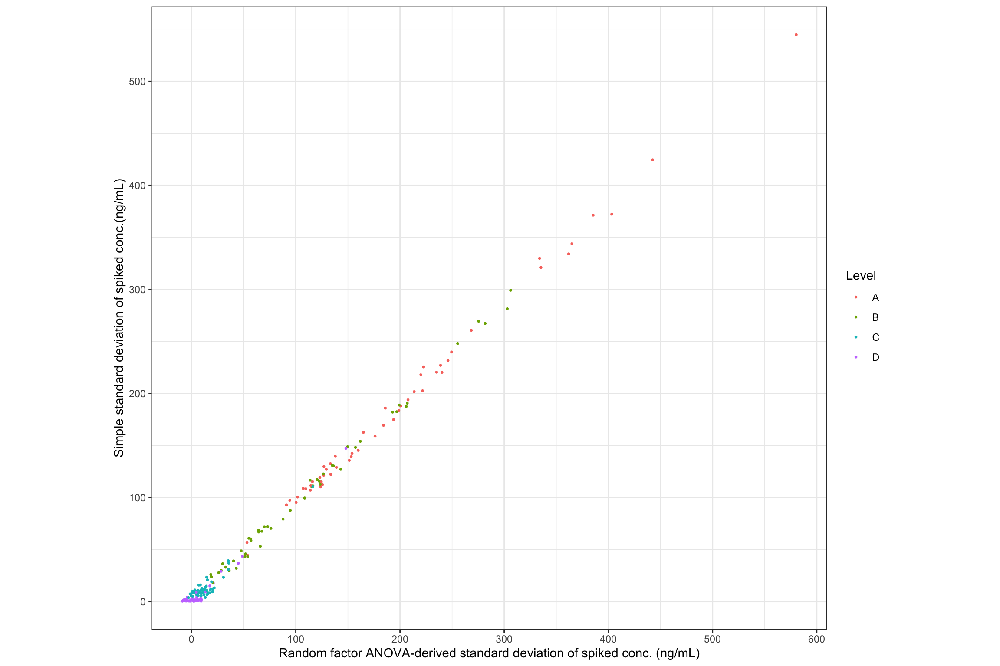
# plot 2 Show difference percentage; bar plot
conc.stats.df %>%
# show difference percent: (random - simple)/simple (%)
mutate(var.diff.rand.VS.simple = (conc.std.total - conc.std.simple)/conc.std.simple * 100) %>%
filter(Level %in% c("A", "B", "C", "D")) %>% # remove "Enz" and "Blank", as above
ggplot(aes(x = compound, y = var.diff.rand.VS.simple)) + geom_bar(stat = "identity") +
coord_flip() + facet_grid(Tissue ~ Level)# plot 3 Show difference distribution; histogram
conc.stats.df %>%
# show difference percent: (random - simple)/simple (%)
mutate(var.diff.rand.VS.simple = (conc.std.total - conc.std.simple)/conc.std.simple * 100) %>%
filter(Level %in% c("A", "B", "C", "D")) %>%
ggplot(aes(x = var.diff.rand.VS.simple, fill = Level)) +
geom_histogram(binwidth = .5) + scale_x_continuous(breaks = seq(0, 25, 5)) +
labs(x = "Percent point difference of random effects-derived std higher than simple std") +
theme_bw() + facet_wrap(~Tissue) +
theme(panel.grid = element_blank(), strip.background = element_blank())# plot 4 Show observations (rows) with large difference (> 10 %)
conc.stats.df %>%
mutate(var.diff.rand.VS.simple = (conc.std.total - conc.std.simple)/conc.std.simple * 100) %>%
filter(var.diff.rand.VS.simple > 10) ## # A tibble: 3 x 9
## # Groups: Tissue, Level [2]
## Tissue Level compound conc.var.total conc.std.total conc.mean
## <ord> <chr> <chr> <dbl> <dbl> <dbl>
## 1 Pl B 3-HPPA 1339. 36.6 689.
## 2 Br D 4-HBOH 0.429 0.655 2.81
## 3 Br D VLiAce 1.76 1.33 16.2
## # … with 3 more variables: conc.var.simple <dbl>, conc.std.simple <dbl>,
## # var.diff.rand.VS.simple <dbl># When the difference is bigger than 10% of simple variance, the sample variance is negligible; most variance from injection !!2.2.4 Accuracy
# 1) Clean up "conc.stats.df"
blank.df = conc.stats.df %>% ungroup %>%
filter(Level == "Blank") %>%
select(-c(Level, conc.var.total, conc.std.total)) %>% # Notice the ungroup function
rename(blank.mean = conc.mean, blank.var = conc.var.simple, blank.std = conc.std.simple)
Enz.df = conc.stats.df %>% ungroup %>%
filter(Level == "Enz") %>% select(-c(Level, conc.var.total, conc.std.total)) %>%
rename(Enz.mean = conc.mean, Enz.var = conc.var.simple, Enz.std = conc.std.simple)
conc.ABCD.stats.df = conc.stats.df %>%
filter(Level %in% c("A","B","C","D")) %>%
select(-c(conc.var.simple, conc.std.simple)) %>%
rename(spk.measure.mean = conc.mean, spk.measure.var = conc.var.total, spk.measure.std = conc.std.total) %>%
select(Tissue, Level, compound, spk.measure.mean, spk.measure.var, spk.measure.std)
Accuracy.df = conc.ABCD.stats.df %>%
left_join(blank.df, by = c("Tissue", "compound")) %>% select(-ends_with("std"))
# 2) Combine with expected spike amount
# import spike level data set
spk.df = read_excel(path = path, sheet = "spike.stock.solution(ug.mL-1)")
# The imported conc. being the stock conc. of A,B, C, D. 10 ul spiked into plasma (final reconsitution volume (FRV) 100 ul) and 20 ul spiked into brain (FRV 200 ul)
spk.df = spk.df %>% gather(-compound, key = Level, value = `conc.stock`) %>%
mutate(spk.true = conc.stock/10*1000 ) %>% select(-conc.stock)
# "spk.true", the expected/spiked concentration in the HPLC vial before injection
# combine meausred data set with actual spike amoung data set
Accuracy.df = Accuracy.df %>% left_join(spk.df, by = c("compound", "Level"))
# 3) Calculate accuracy mean and variability
Accuracy.df = Accuracy.df %>%
mutate(`Accuracy.mean(%)` = (spk.measure.mean - blank.mean)/spk.true * 100,
`Accuracy.std (%)`= 1/spk.true * sqrt(spk.measure.var + blank.var) * 100)
# 4) Rearrange compound order according to the average level of accuracy in both tissues and all spike levels (except D)
x = Accuracy.df %>% filter(Level != "D") %>% group_by(compound) %>%
summarise(AC.TissueLevelMean = mean(`Accuracy.mean(%)`)) %>% arrange(AC.TissueLevelMean)
cmpd.ordered = factor(x$compound, ordered = T)
Accuracy.df = Accuracy.df %>% mutate(compound = factor(compound, levels = cmpd.ordered))
# 5) Plot accuracy
dotsize = 2
dodge = 0.3
plt.Accuracy = Accuracy.df %>%
ggplot(aes(x = compound, y = `Accuracy.mean(%)`, color = Level)) +
geom_errorbar(aes(ymin = `Accuracy.mean(%)` - `Accuracy.std (%)`, ymax = `Accuracy.mean(%)` + `Accuracy.std (%)`),
position = position_dodge(dodge), width = .9, size = .5) +
# Errorbar function has to be above rectangle annotation...
annotate("rect", xmin = 1, xmax = 26, ymin = 80, ymax = 120, alpha = .1, fill = "black") +
annotate("segment", x = 1, xend = 26, y = 100, yend = 100, linetype = "dashed", size = .4) +
geom_point(position = position_dodge(dodge), shape = 21, fill = "white", size = dotsize) +
# Notice that two y-label will be plotted if "scales = free" is set
facet_wrap(~Tissue) + coord_flip(ylim = c(0, 200)) +
theme_bw() + scale_color_manual(values = c("black", "firebrick", "steelblue", "light salmon")) +
theme(axis.text = element_text(color ="black")) +
theme(strip.text = element_text(face = "bold"), strip.background = element_blank(),
panel.grid = element_blank(), axis.title = element_text(face = "bold")) + labs(y = "Accuracy (%)")
plt.Accuracy2.2.5 Inference across linear range
Inference of accuracy and random ANOVA across entire calibration range.
#### Accuracy inference throughout entire LDR ----
Accuracy.LDR.df = Accuracy.df %>% ungroup() %>%
select(Tissue, Level, compound, `Accuracy.mean(%)`, `Accuracy.std (%)`)
# 1) Remove extreme levels due to blank inteference
x1 = Accuracy.LDR.df %>%
# introduced from Enzyme
filter(((compound %in% c("4-HPAA", "4-HBA", "3-HPAA")) & (Level == "D")))
x2 = Accuracy.LDR.df %>%
# only endogenous in brain
filter( ((compound %in% c("3,4-DHPAA", "HVA")) & (Level == "D") & (Tissue == "Br") ) )
x3 = Accuracy.LDR.df %>%
# peculiar outlier
filter( ((compound %in% c("CA", "3,4-DHPhLiAce", "3,4-DHPPA", "3,4-DHPAA", "3,4-DHPE")) &
(Tissue == "Pl") & (Level == "D")) )
D.label.df = rbind(x1, x2, x3) # collection of removed D levels
# remaining after removal of crazy D levels
Accuracy.LDR.df = Accuracy.LDR.df %>%
anti_join(D.label.df, by = c("Tissue","compound", "Level" ))
# 2) Mark removed rows
x = D.label.df %>% select(Tissue, Level, compound) %>% mutate(removeD = "*") %>% select(-Level)
Accuracy.LDR.df = Accuracy.LDR.df %>% left_join(x, by = c("compound", "Tissue"))
# 3) Calculate MSE (associated with QC replicates)
MSE.LDR.df = Accuracy.LDR.df %>%
mutate(`Accuracy.var(%)` = `Accuracy.std (%)`^2) %>% group_by(Tissue, compound) %>%
summarise(MSE = mean(`Accuracy.var(%)`), removeD = unique(removeD))
# 4) calculate MSlevel (associated with spike concentration levels)
MS.level.LDR.df = Accuracy.LDR.df %>% group_by(Tissue, compound) %>%
mutate(SS.level = 5 * (`Accuracy.mean(%)` - mean(`Accuracy.mean(%)`))^2 ) %>%
summarise(SS.level = sum(SS.level), level.no = n_distinct(Level)) %>%
mutate(MS.level = SS.level / (level.no - 1))
# 5) Calculate total variance
Accuracy.LDR.var.df = MSE.LDR.df %>%
left_join(MS.level.LDR.df, by = c("compound", "Tissue")) %>%
mutate(var.level = (MS.level - MSE)/5 ) %>%
# negative adjusted to zero (insignificant level difference)
mutate(var.level = ifelse(var.level > 0, var.level, 0)) %>%
mutate(var.total = MSE + var.level, std.total = sqrt(var.total))
# 6) Calculate the average accuracy and combine data
Accuracy.LDR.df = Accuracy.LDR.df %>% group_by(Tissue, compound) %>%
summarise(`Accuracy.LDR` = mean(`Accuracy.mean(%)`)) %>%
left_join(Accuracy.LDR.var.df, by = c("Tissue", "compound"))
# 7) Visualize
# 7-1 )
plt.LDR1 = Accuracy.LDR.df %>% ggplot(aes(x = compound, y = Accuracy.LDR)) +
# geom_bar(stat = "identity", alpha = .8) +
geom_errorbar(aes(ymin = Accuracy.LDR - std.total, ymax = Accuracy.LDR + std.total), width = .25) +
geom_point(shape = 21, fill = "white", size = 2) +
coord_flip() + facet_wrap(~ Tissue, nrow = 1) +
annotate(geom = "segment", x = 1, xend = 26, y = 100, yend = 100,
color = "firebrick", linetype = "dashed") +
theme_bw() + theme(strip.text = element_text(face = "bold"), strip.background = element_blank(),
panel.grid = element_blank(), axis.text = element_text(color = "black")) +
# marking removed rows, vjust to align up with y-axis label
geom_text(aes(label = removeD, x = compound), y = 5, color = "steelblue", vjust = .8) +
annotate(geom = "rect", xmin = 1, xmax = 26, ymin = 80, ymax = 120, fill = "black", alpha = .08)
plt.LDR1 # removed rows has no stars; those removed rows have A-B-C-D four levels included in referrence# 7-2)
plt.LDR2 = Accuracy.LDR.df %>% select(Tissue, compound, MSE, var.level) %>%
gather(c(MSE, var.level), key = source, value = value) %>%
ggplot(aes(x = compound, y = value, fill = source)) +
geom_bar(stat = "identity", position = position_fill(), alpha = .8) +
coord_flip() + facet_wrap(~Tissue) + theme_minimal() +
theme(axis.text = element_text(color = "black"), panel.grid = element_blank()) +
scale_fill_brewer(palette = "Set1")
plt.LDR2# plot_grid(plt.LDR1, plt.LDR2, nrow = 1, align = "h", rel_widths = c(1, 0.8))2.2.6 Background interference
Check metabolites occurrence in the blank (control) sample and enzymetic solution. Blank conent = Endogenous content in the control tissue + Exogenous content in the enzyme solution
# 1) Clean up
blank.Enz.df = conc.stats.df %>% filter(Level %in% c("Blank", "Enz")) %>%
select(-c(conc.var.total, conc.std.total, conc.var.simple)) %>%
mutate(compound = factor(compound, levels = cmpd.ordered, ordered = T))
# 2) Plot Blank vs. Enz
plt.blank.Enz = blank.Enz.df %>%
ggplot(aes(x = compound, y = conc.mean, fill = Level, color = Level)) +
geom_bar(stat = "identity", position = position_dodge(),
alpha = 0.6, color = "NA", width = .8) +
geom_errorbar(aes(x = compound,
ymin = conc.mean - conc.std.simple,
ymax = conc.mean + conc.std.simple),
width = .6, position = position_dodge(1)) +
coord_flip() +
annotate(geom = "segment", x = 1, xend = 26, y = 1, yend = 1, linetype = "dashed") +
facet_wrap( ~ Tissue) + theme_bw() +
theme(strip.text = element_text(face = "bold"), strip.background = element_blank(),
panel.grid = element_blank(), axis.text = element_text(color = "black"))
plt.blank.Enz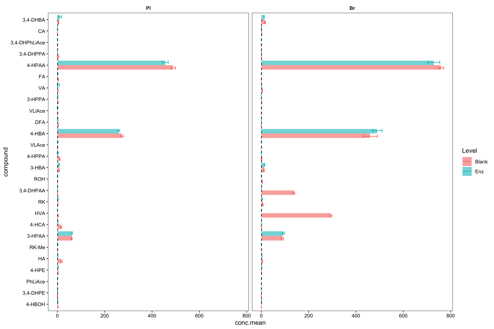
blank.Enz.df %>% filter(Tissue == "Br", compound %in% c("HVA", "3,4-DHPAA")) # manual check## # A tibble: 4 x 5
## # Groups: Tissue, Level [2]
## Tissue Level compound conc.mean conc.std.simple
## <ord> <chr> <ord> <dbl> <dbl>
## 1 Br Blank 3,4-DHPAA 138. 3.84
## 2 Br Enz 3,4-DHPAA 0.504 0.230
## 3 Br Blank HVA 294. 4.35
## 4 Br Enz HVA 0 0# 3) Compare accuracy vs. endogenous level
ggdraw() + draw_plot(plt.Accuracy, x = 0, y = 0, width = 0.6) +
draw_plot(plt.blank.Enz, x = 0.6, width = 0.4)# 4) Correlate accuracy variance with blank level
Accuracy.blank.df = Accuracy.df %>%
# remove zero blanks before log10 transformation
filter(blank.mean > 0) %>%
nest(-c(Tissue, Level)) %>%
mutate(model = map(data, ~lm(log10(`Accuracy.std (%)`) ~ log10(blank.mean), data = .)),
glanced = map(model, glance)) %>%
unnest(glanced) %>% unnest(data) %>%
# set up regression analysis
select(-c(adj.r.squared, sigma, statistic, df, logLik, AIC, BIC, deviance, df.residual)) %>%
mutate(r.squared = round(r.squared, 3), p.value = scientific(p.value, 2))
# Note here that it is the logarithmically transformed data that is correlated!
# 4-1) Construct regression: version 1, more faceted
plt.Accuracy.blank.regression_ver1 = Accuracy.blank.df %>%
ggplot(aes(x = log10(blank.mean),
y = log10(`Accuracy.std (%)`),
color = compound)) + # plot main body
geom_text(aes(label = compound), size = 2.5) +
facet_grid(Tissue ~ Level) + theme_bw() +
theme(strip.text = element_text(face = "bold"),
strip.background = element_blank(), panel.grid = element_blank(),
axis.text = element_text(color = "black"), legend.position = "None") +
scale_color_manual(values = colorRampPalette(brewer.pal(8, "Dark2"))(26)) +
# regression and statistics
geom_smooth(method = "lm", se = F, color = "black", size = .3) +
geom_text(aes(x = -.6, y = 2.6, label = str_c("R2 = ", r.squared, "\np = ", p.value)),
size = 3, color = "black", fontface = 0, hjust = 0)
plt.Accuracy.blank.regression_ver1# 4-2) Construct regression: version 2, overlapped
plt.Accuracy.blank.regression_ver2 = Accuracy.blank.df %>%
left_join(cmpd.code, by = "compound") %>%
ggplot(aes(x = blank.mean, y = `Accuracy.std (%)`, color = Level)) +
geom_text(aes(label = compound), size = 2.2, alpha = 0.9) +
scale_x_log10(breaks = c( 0.1, 1, 10, 100, 500)) +
scale_y_log10(breaks = c(1, 5, 10, 50, 100, 500, 1000)) +
annotation_logticks() + facet_wrap(~Tissue) +
scale_color_manual(values = c("#008B8B", "#6B8E23", "orangered", "black")) +
theme_bw() + theme(strip.text = element_text(face = "bold"),
strip.background = element_blank(), panel.grid = element_blank(),
axis.text = element_text(color = "black", size = 11.5),
axis.title = element_text(face = "bold")) +
labs(x = "Log10 (Blank concentration (ng/mL))",
y = "Log10 (Accuracy standard deviation (%))") +
# regression and statistics
geom_smooth(method = "lm", se = F, size = .8) +
geom_text(aes(x = 1, y = 200, label = r.squared), size = 2,
fontface = 0, hjust = 0, position = position_dodge(1.5)) +
geom_text(aes(x = 1, y = 150, label = p.value), size = 2,
fontface = 0, hjust = 0, position = position_dodge(2))
plt.Accuracy.blank.regression_ver22.2.7 Random effects ANOVA (revised)
# 1) data set
x = blank.df %>% select(Tissue, compound, blank.var)
x %>% filter(compound == "HVA")## # A tibble: 2 x 3
## Tissue compound blank.var
## <ord> <chr> <dbl>
## 1 Pl HVA 0.662
## 2 Br HVA 18.9variance.partition.all.df =
conc.ABCD.stats.df.laterUse %>% ungroup() %>%
select(Tissue, Level, compound, conc.var.smpl, conc.var.inj) %>%
left_join(x, by = c("compound", "Tissue")) %>%
# arrange in order to check programming went okay
arrange(compound, Tissue, Level) %>%
gather(-c(Tissue, Level, compound), key = source, value = variance) %>%
mutate(compound = factor(compound, levels = cmpd.ordered, ordered = T))
# 2-1) visualization - fill chart
plt.ANOVA.variance.partition =
variance.partition.all.df %>%
ggplot(aes(x = compound, y = variance, fill = source)) +
geom_bar(stat = "identity", position = "fill", alpha = .9) +
coord_flip() + facet_grid(Tissue ~ Level, scales = "free") + theme_minimal() +
theme(axis.text = element_text(color = "black", size = 7.1), panel.grid = element_blank()) +
scale_fill_manual(values = c("#212624", "tomato", "#54678F")) # black - red - blue
plt.ANOVA.variance.partition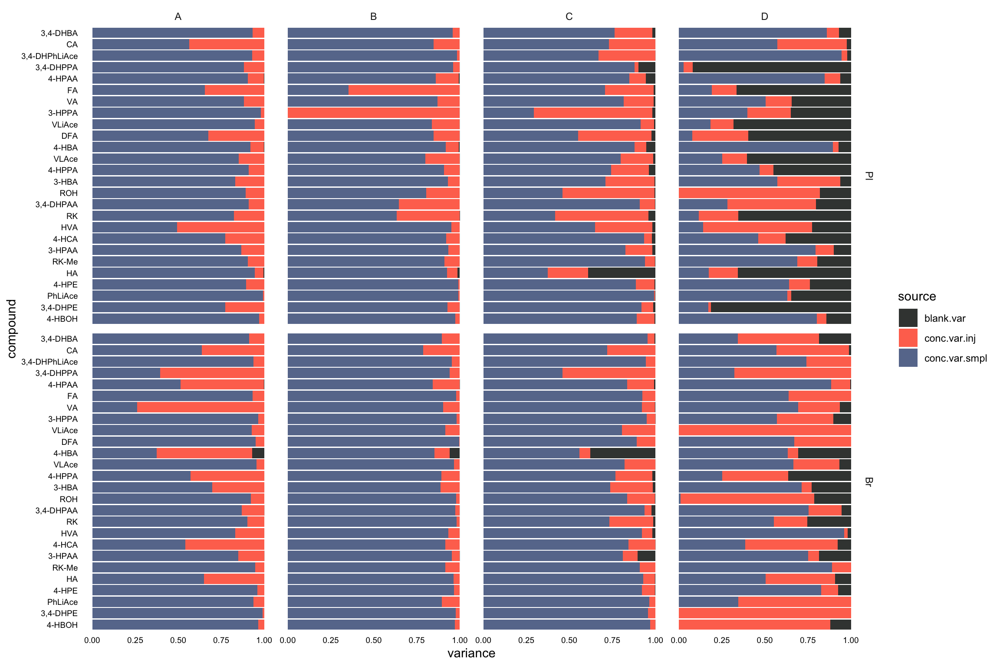
# 2-2) visualization - dodged position
plt.ANOVA.variance.partition.dodge = variance.partition.all.df %>%
# filter(Level == "D") %>%
ggplot(aes(x = compound, y = variance, fill = source)) +
geom_bar(stat = "identity", position = position_dodge(), alpha = .9) +
coord_flip() + facet_grid(Tissue ~ Level, scales = "free") +
theme_bw() + theme(legend.position = "bottom") +
# coord_flip(ylim = c(0, 10)) +
theme(axis.text = element_text(color = "black", size = 7.1),
panel.grid = element_blank(), strip.background = element_blank()) +
scale_fill_manual(values = c("#212624", "tomato", "#54678F")) # black - red - blue
plt.ANOVA.variance.partition.dodge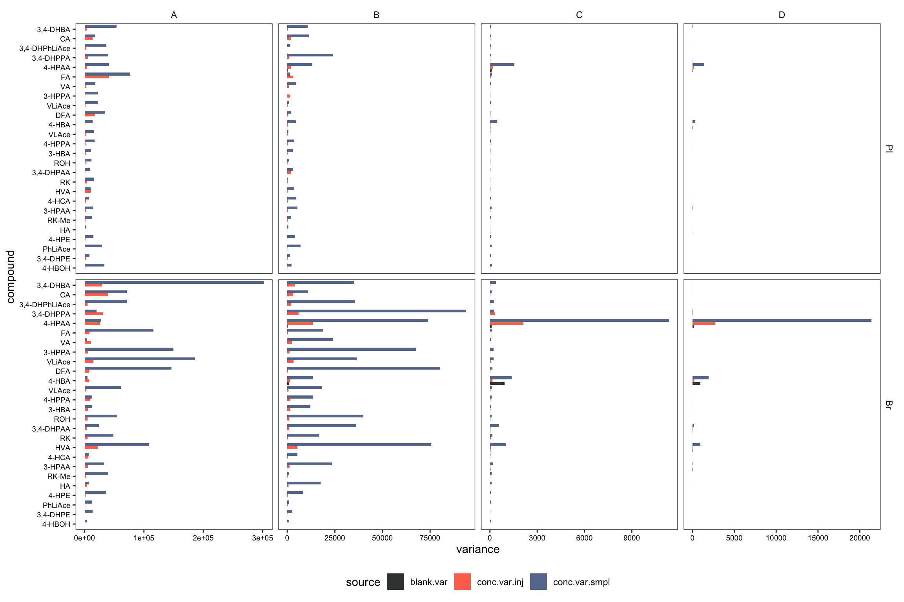
2.2.8 Repeatability ( revised 1)
Plot with re-ordered compound by order of averaged accuracy level (ABC).
# 1) Primary plot
plt.Repeatability = Repeatability.df %>%
mutate(compound = factor(compound, levels = cmpd.ordered, ordered = T)) %>%
left_join(cmpd.code, by = "compound") %>%
group_by(Tissue) %>% mutate(avg = mean(`Repeatability(%)`)) %>%
ggplot(aes(x = compound, y = `Repeatability(%)`, color = Level)) +
geom_point(position = position_dodge(dodge), shape = 21, fill = "white", size = dotsize) +
scale_y_continuous(limits = c(0, 20), breaks = seq(0, 20, 5)) +
coord_flip() + facet_wrap(~Tissue) +
theme_bw() +
scale_color_manual(values = c("black", "firebrick", "steelblue", "light salmon")) +
theme(axis.text = element_text(color ="black")) +
theme(strip.text = element_text(face = "bold"), strip.background = element_blank(),
panel.grid = element_blank(), axis.title = element_text(face = "bold")) +
labs(y = "repeatability (%)") +
geom_line(aes(x = cmpd.code, y = avg), linetype = "dashed",
color = "black", size = .4) # annotate average level
plt.Repeatability# 2) Summary plot
plt.Repeatability.hist =
Repeatability.df %>% ggplot(aes(x = `Repeatability(%)`, fill = Level)) +
geom_histogram(binwidth = .5) +
facet_wrap(~Tissue, nrow = 1) + theme_bw() +
theme(axis.text = element_text(color ="black")) +
theme(strip.text = element_text(face = "bold"),
strip.background = element_blank(), panel.grid = element_blank()) +
scale_fill_brewer(palette = "Set2")
plt.Repeatability.hist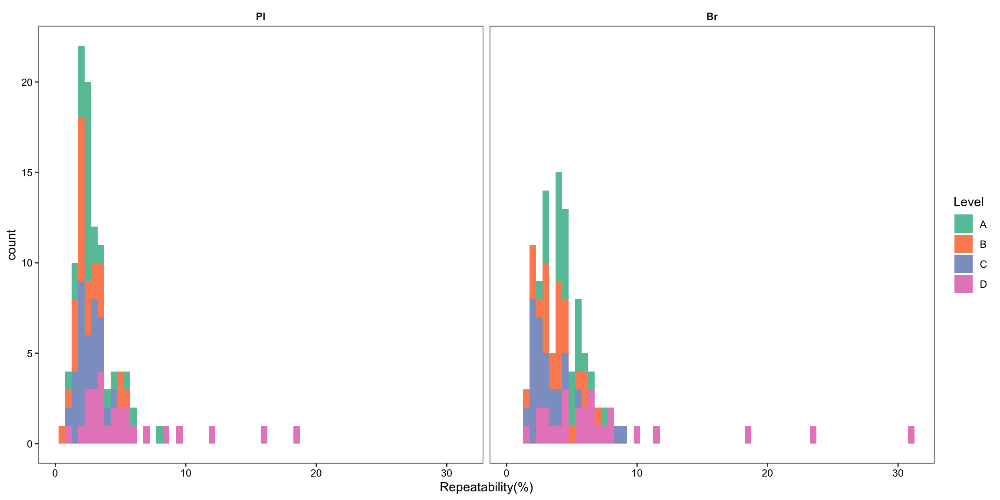
2.3 Matrix effects, recovery and processing efficiency
2.3.1 Matrix effect
# 1) Import data set and clean up
area.df = read_excel(path, sheet = "peak area_B.Y.")
area.df = area.df %>% select(-c(Name, `Acq. Date-Time`)) %>%
filter( !(Level %in% c("A","D"))) %>%
# matrix effect validated on B, C level, not including A and D
gather(-c(`Data File`, Tissue, Level), key = compound, value = area)
# 1-1) spike in pure solvent
area.sol.df = area.df %>% filter(Tissue == "Sol") %>%
group_by(Tissue, Level, compound) %>%
summarise(area.sol.mean = mean(area), area.sol.std = sd(area)) %>%
ungroup() %>% select(-Tissue)
# 1-2) post-extraction spike in biomatrix
post.index = area.df$`Data File` %>% str_detect(pattern = or("Post", "post"))
area.postBio.df = area.df[post.index,] %>% filter(Tissue != "Sol") %>%
group_by(Tissue, Level, compound) %>%
summarise(area.postBio.mean = mean(area), area.postBio.std = sd(area))
# 1-3) pre-extraction spike in biomatrix
area.preBio.df = area.df[!post.index, ] %>% filter(Level != "Blank") %>%
group_by(Tissue, Level, compound) %>%
summarise(area.preBio.mean = mean(area), area.preBio.std = sd(area))
# 1-4) blank
area.blk.df = area.df %>% filter(Level == "Blank") %>%
group_by(Tissue, compound) %>%
summarise(area.blk.mean = mean(area), area.blk.std = sd(area))
# 1-5) combine all three types of spike
matrix.df = area.preBio.df %>%
left_join(area.postBio.df, by = c("Tissue", "Level", "compound")) %>%
left_join(area.sol.df, by = c("Level", "compound")) %>%
left_join(area.blk.df, by = c("Tissue", "compound"))
# 2) Compute matrix effect, recovery, and processing efficiency
matrix.df = matrix.df %>%
mutate(`Recovery.mean(%)` = area.preBio.mean / area.postBio.mean * 100,
`Recovery.std (%)` = `Recovery.mean(%)` *
sqrt( (area.preBio.std/area.preBio.mean)^2 + (area.postBio.std/area.postBio.mean)^2) ,
`Matrix.mean(%)` = (area.postBio.mean - area.blk.mean)/ area.sol.mean * 100,
`Matrix.std (%)` = `Matrix.mean(%)` *
sqrt( (area.postBio.std^2 + area.blk.std^2)/(area.postBio.mean - area.blk.mean)^2 +
(area.sol.std/area.sol.mean)^2 ) ,
`Process.mean (%)` = (area.preBio.mean - area.blk.mean)/area.sol.mean * 100,
`Process.std (%)`= `Process.mean (%)` *
sqrt( (area.preBio.std^2 + area.blk.std^2)/(area.preBio.mean - area.blk.mean)^2 +
(area.sol.std/area.sol.mean)^2 )
)
matrix.df = matrix.df %>% ungroup() %>% select(Tissue, Level, compound, contains("%"))
# 3) matrix.df clean up for visualization
x1 = matrix.df %>% select(-contains("std")) %>%
gather(contains("mean"), key = effect, value = mean)
x1$effect = x1$effect %>% str_extract(pattern = one_or_more(WRD))
x2 = matrix.df %>% select(-contains("mean")) %>%
gather(contains("std"), key = effect, value = std)
x2$effect = x2$effect %>% str_extract(pattern = one_or_more(WRD))
matrix.tidy.df = x1 %>%
left_join(x2, by = c("Tissue", "Level", "compound", "effect")) %>%
mutate(Tissue = factor(Tissue, levels = c("Pl","Br"), ordered = T))
# 4) Visualization
# reaarange compound display order
matrix.tidy.df$compound = matrix.tidy.df$compound %>% factor(levels = cmpd.ordered, ordered = T)
matrix.tidy.df = matrix.tidy.df %>% group_by(compound, Tissue, Level, effect) %>%
mutate(plt.align = sample(1:1000, 1)) # for central dot & error bar alignment
# 4-1) normal scale
plt.matrix = matrix.tidy.df %>% ungroup() %>%
mutate(effect = str_extract(effect, pattern = WRD)) %>%
mutate(effect = factor(effect, levels = c("R", "M", "P"), ordered = T)) %>% # effect display order
ggplot(aes(x = compound, y = mean, color = effect, shape = Level, group = plt.align)) +
geom_errorbar(aes(ymin = mean - std, ymax = mean + std),
position = position_dodge(dodge), width = .9, size = .5) +
# rectangular...has to be after errorbar
annotate("rect", xmin = 1, xmax = 26, ymin = 80, ymax = 120, alpha = .1, fill = "black") +
annotate("segment", x = 1, xend = 26, y = 100, yend = 100, linetype = "dashed", size = .4) +
geom_point(position = position_dodge(dodge), fill = "white", size = dotsize) +
scale_shape_manual(values = c(15, 22)) +
facet_wrap(~Tissue) + coord_flip(ylim = c(0, 200)) +
scale_color_brewer(palette = "Dark2") + theme_bw() +
labs(y = "Effects (%)") +
theme(strip.text = element_text(face = "bold"), strip.background = element_blank(),
panel.grid = element_blank(),
axis.text = element_text(color = "black"), axis.title = element_text(face = "bold"))
plt.matrix # M, matrix effect; P, processing; R, recovery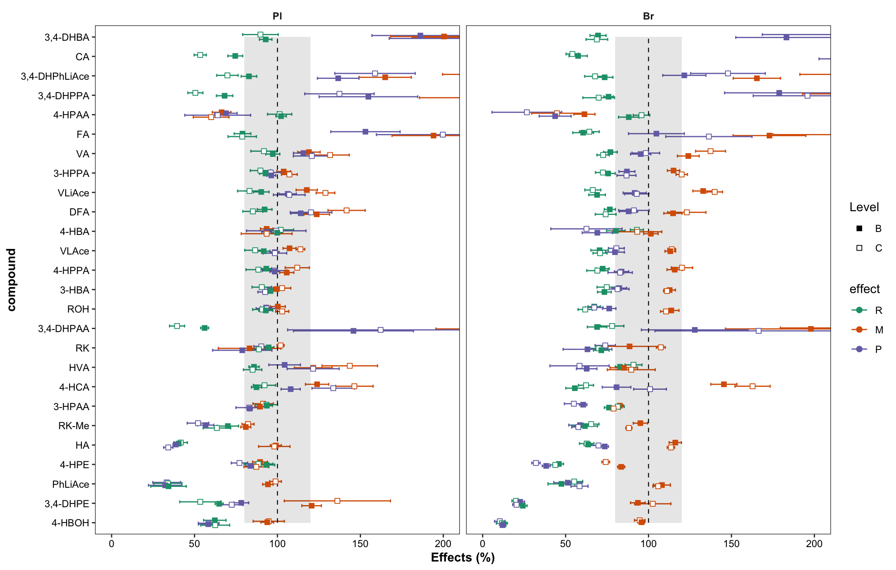
# 4-2) log10 scale as miniature inset
plt.matrix.miniature = matrix.tidy.df %>%
mutate(mean.log = log10(mean), std.log = log10(std)) %>%
ggplot(aes(x = compound, y = mean.log, color = effect, shape = Level, group = plt.align)) +
geom_point(position = position_dodge(dodge), fill = "white") +
scale_shape_manual(values = c(15, 22)) +
annotate("segment", x = 1, xend = 26, y = log10(100), yend = log10(100),
linetype = "dashed", size = .4) +
facet_wrap(~Tissue) + coord_flip() + scale_color_brewer(palette = "Dark2") +
theme_bw() + theme(strip.text = element_text(face = "bold"),
strip.background = element_blank(), panel.grid = element_blank(),
axis.text = element_text(color = "black")) +
labs(title = "logscale")
plt.matrix.miniature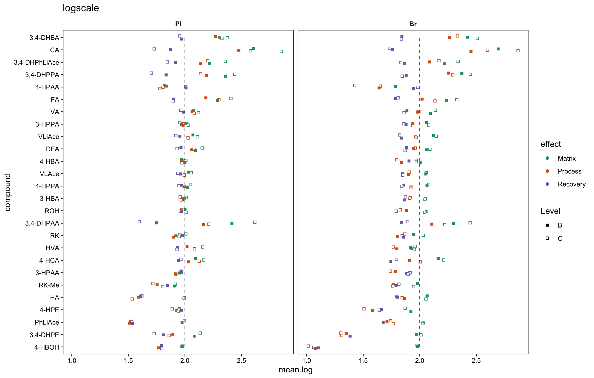
# 5) density plot of recovery vs. matrix effects
plt.density.matrix.recovery = matrix.df %>%
mutate(notes = str_c(compound, "_", Level)) %>%
mutate(Tissue = factor(Tissue, levels = c("Pl", "Br"), ordered = T)) %>%
ggplot(aes(x = `Recovery.mean(%)`, y = `Matrix.mean(%)`)) +
stat_density_2d(aes(fill = stat(density)), geom = "raster", contour = F) +
scale_fill_viridis(option = "inferno") + facet_wrap(~Tissue) +
geom_rug(sides = "tr", color = "steelblue", alpha = 0.5) +
scale_x_log10() + scale_y_log10() + annotation_logticks() +
theme_minimal() +
theme(axis.text = element_text(color = "black"), panel.spacing = unit(.5, "cm")) +
geom_point(color = "white", alpha = .3, size = .6, shape = 16)
# geom_text(color = "white", size = 1, alpha = .5, aes(label = notes))
plt.density.matrix.recovery2.3.2 Matrix effect vs. accuracy
Check the correlation of matrix effect (average of B & C levels) vs. accuracy (average of A B and C; without D)
# 1) Combine matrix effect data set with accuracy data set
x1= matrix.df %>% group_by(Tissue, compound) %>%
summarise(matrix.LevelMean = mean(`Matrix.mean(%)`),
recovery.LevelMean = mean(`Recovery.mean(%)`),
Process.LevelMean = mean(`Process.mean (%)`))
x2 = Accuracy.df %>% filter(Level != "D") %>% group_by(Tissue, compound) %>%
summarise(accuracy.LevelMean = mean(`Accuracy.mean(%)`))
Acc.Mat.df = x1 %>% left_join(x2, by = c("compound", "Tissue"))
Acc.Mat.tidy.df = Acc.Mat.df %>%
gather(c(matrix.LevelMean, recovery.LevelMean, Process.LevelMean),
key = effect, value = effect.percent) %>%
mutate(effect = str_extract(effect, pattern = one_or_more(WRD))) # tidy up
# 2) Compute coorelation and visualize
Acc.Mat.tidy.df %>%
ggplot(aes(x = effect.percent, y = accuracy.LevelMean, color = effect)) +
geom_point() + facet_wrap(~ Tissue, nrow = 1, scales = "free") +
geom_smooth(method = "lm", se = F) +
stat_smooth_func(geom = "text", parse = T,
position = position_jitterdodge(0, .2), method = "lm", hjust = 0) +
scale_x_log10() + scale_y_log10(breaks = seq(0, 200, 50)) +
annotation_logticks(scaled = T, short = unit(.8, "mm")) +
theme_bw() +
theme(strip.text = element_text(face = "bold"), strip.background = element_blank(),
panel.grid = element_blank(), axis.text = element_text(color = "black"))# 3) Manually calculate coorelation for double check & annotation with designted location
plt.Acc.mat = Acc.Mat.tidy.df %>% ungroup() %>% nest(-c(Tissue, effect)) %>%
mutate(model = map(data, ~ lm(log10(accuracy.LevelMean) ~ log10(effect.percent), data = .)),
glanced = map(model, glance)) %>% unnest(glanced) %>%
# Note here that it is the logarithmically transformed data that is correlated!
# the result is the same as using built-in stat_smooth_func demand!!!
select(Tissue, effect, r.squared, p.value) %>%
mutate(r.squared = round(r.squared, 2), p.value = scientific(p.value, 2)) %>%
# join original data set (accuracy, matrix....)
right_join(Acc.Mat.tidy.df, by = c("Tissue", "effect")) %>%
left_join(cmpd.code, by = "compound") %>%
# Set Pl then Br display order
mutate(Tissue = factor(Tissue, levels = c("Pl", "Br"), ordered = T)) %>%
ggplot(aes(x = effect.percent, y = accuracy.LevelMean, color = effect)) +
geom_text(aes(label = compound), size = 1.7, alpha = 0.9,
position = position_jitter(0.08, .08)) +
facet_wrap(~ Tissue, nrow = 1) +
scale_x_log10(breaks = c(10, 50, 100, 500)) +
scale_y_log10(breaks = c(10, 50, 100, 150, 200)) +
annotation_logticks(scaled = T, short = unit(.8, "mm")) +
annotate("segment", x = 10, xend = 300, y = 10, yend = 300,
linetype = "dashed", size = .4, color ="darkgreen") + # length limited by above scale breaks
annotate("text", x = 220, y = 290, label = "y = x", color = "darkgreen" ) + # annotate y = x
labs(x = "Log10 (Effects (%))", y = "Log10 (Accuracy (%))") +
geom_smooth(method = "lm", se = F, alpha = 0.7, size = .8) + # add regresson and statistics
geom_text(aes(x = 220, y = 30, label = r.squared), size = 2, position = position_dodge(.5)) +
geom_text(aes(x = 220, y = 25, label = p.value), size = 2,position = position_dodge(.8)) +
theme_bw() + # theme
theme(strip.text = element_text(face = "bold"), strip.background = element_blank(),
panel.grid = element_blank(), axis.text = element_text(color = "black", size = 11.5),
axis.title = element_text(face = "bold")) +
scale_color_manual(values = c("Firebrick", "Steelblue", "Black"))
plt.Acc.mat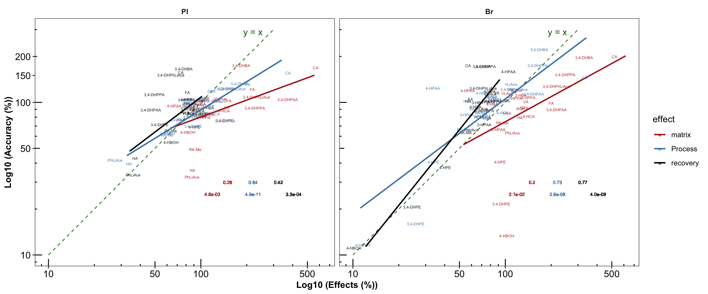
# 4) plot regression analysis together
# plot_grid(plt.Accuracy.blank.regression_ver2, plt.Acc.mat, align = "v", nrow = 2) # ~ 1:1 display ratio
# Combine plots together
# ggdraw() +
# draw_plot(plt.ANOVA.variance.partition, x =0, y = 0, width = 0.5, height = 1) +
# draw_plot(plt.Accuracy.blank.regression_ver2, x = 0.5, y = 0.5, width = 0.5, height = .5) +
# draw_plot(plt.Acc.mat, x = 0.5, y = 0, width = 0.5, height = .5)2.3.3 Repeatability (revised 2)
Re-plot repeatability plot with re-ordered compound by order of averaged accuracy level (ABC)
# 1) Primary plot
plt.Repeatability = Repeatability.df %>%
mutate(compound = factor(compound, levels = cmpd.ordered, ordered = T)) %>%
left_join(cmpd.code, by = "compound") %>%
group_by(Tissue) %>% mutate(avg = mean(`Repeatability(%)`)) %>%
ggplot(aes(x = compound, y = `Repeatability(%)`, color = Level)) +
geom_point(position = position_dodge(dodge), shape = 21, fill = "white", size = dotsize) +
scale_y_continuous(limits = c(0, 20), breaks = seq(0, 20, 5)) +
coord_flip() + facet_wrap(~Tissue) +
theme_bw() + scale_color_manual(values = c("black", "firebrick", "steelblue", "light salmon")) +
theme(axis.text = element_text(color ="black")) +
theme(strip.text = element_text(face = "bold"), strip.background = element_blank(),
panel.grid = element_blank(), axis.title = element_text(face = "bold")) +
labs(y = "repeatability (%)") +
# annotate average level
geom_line(aes(x = cmpd.code, y = avg), linetype = "dashed", color = "black", size = .4)
plt.Repeatability# 2) Summary plot
Repeatability.df %>% ggplot(aes(x = `Repeatability(%)`, color = Level, fill = Level)) +
geom_histogram(binwidth = 1) + facet_wrap(~Tissue, nrow = 1) +
theme(axis.text = element_text(color ="black")) +
theme(strip.text = element_text(face = "bold"),
strip.background = element_blank(), panel.grid = element_blank())2.3.4 Accuracy & repeatabiltiy plot & matrix effects
# 1) standard plot
# the two missing values come from repeatability (removed high repeatability, Check!)
grid.arrange(plt.Accuracy, plt.Repeatability, plt.matrix, nrow = 1)# 2) density plot of averaged accuracy vs. precision
plt.density.accuracy.vs.repeatability = Repeatability.df %>% ungroup() %>%
select(Tissue, Level, compound, `Repeatability(%)`) %>%
left_join(Accuracy.df %>% ungroup() %>% select(Tissue, Level, compound, `Accuracy.mean(%)`),
by = c("compound", "Tissue", "Level")) %>%
mutate(notes = str_c(compound, "_", Level)) %>%
ggplot(aes(x = `Accuracy.mean(%)`, y = `Repeatability(%)`)) +
stat_density_2d(aes(fill = stat(density)), geom = "raster", contour = F) +
scale_fill_viridis() + facet_wrap(~Tissue) +
geom_rug(sides = "tr", alpha = 0.5, color = "steelblue") +
# geom_text(color = "white", size = 1, alpha = .5, aes(label = notes)) +
geom_point(color = "white", alpha = .3, size = .6, shape = 16) +
scale_x_log10() + scale_y_log10() + annotation_logticks() + theme_minimal() +
theme(axis.text = element_text(color = "black"), panel.spacing = unit(.5, "cm"))
plt.density.accuracy.vs.repeatability2.3.5 IS correction vs. accuracy vs. processing efficiency
# 1) Dataset clean up
Acc.Process.df = Acc.Mat.tidy.df %>% filter(effect == "Process") %>%
mutate(Process.diff = (effect.percent - 100),
Accuracy.diff = (accuracy.LevelMean - 100)) %>%
select(Tissue, compound, ends_with("diff")) %>%
gather(ends_with("diff"), key = source, value = diff) %>%
mutate(source = str_extract(source, pattern = one_or_more(WRD))) %>% ungroup() %>%
mutate(compound = factor(compound, levels = cmpd.ordered, ordered = T),
Tissue = factor(Tissue, levels = c("Pl", "Br"), ordered = T))
# 2) Bar plot
plt.Acc.Proces = Acc.Process.df %>%
ggplot(aes(x = compound, y = diff, fill = source)) +
geom_bar(stat = "identity", position = position_dodge(.5)) +
coord_flip() + facet_wrap(~Tissue) + theme_bw() +
theme(axis.text = element_text(color = "black", size = 10),
strip.text = element_text(face = "bold"), strip.background = element_blank(),
panel.grid = element_blank(),
legend.position = c(.4, .8),
axis.title = element_text(face = "bold", size = 10)) +
scale_y_continuous(breaks = seq(-50, 250, 50)) +
labs(y = "Deviation of accuracy and processing efficiency from one hundred percentage level",
x = "Metabolites")
plt.Acc.Proces# 3) Regression analysis: IS correction VS Accuracy
Acc.IScorrection.df = Acc.Process.df %>%
spread(key = source, value = diff) %>%
rename(Accuracy.diff = Accuracy, Process.diff = Process) %>%
mutate(Accuracy.abs.diff = abs(Accuracy.diff),
Process.abs.diff = abs(Process.diff),
IS.correction = Accuracy.abs.diff/Process.abs.diff ) %>%
select(-c(Accuracy.diff, Process.diff, Process.abs.diff)) %>%
left_join(cmpd.code, by = "compound") %>%
nest(-Tissue) %>%
# compute regression statistics on log-transformed data
mutate(model = map(data, ~lm(log10(Accuracy.abs.diff) ~ log10(IS.correction), data = .)),
glanced = map(model, glance)) %>%
unnest(glanced) %>% unnest(data) %>%
# Note again that it's the log transformed data that is corrlated
mutate(r.squared = round(r.squared, 4), p.value = scientific(p.value, 3))
# 4) Visualization Showing the impact of IS
# 4-1) Faceted plots
plt.Acc.IScorrection = Acc.IScorrection.df %>%
ggplot(aes(x = IS.correction, y = Accuracy.abs.diff)) +
geom_text(aes(label = compound), size = 1.5) +
scale_x_log10() + scale_y_log10() + annotation_logticks() +
scale_color_brewer(palette = "Set1") +
geom_smooth(method = "lm", se = F, color = "firebrick") + facet_wrap(~Tissue) +
# R2 notation. Notice it's for log transformed regression analysis
geom_text(aes(label = r.squared, x = .1, y = 50),
position = position_dodge(.5), size = 2.5) +
# p value notation. Notice it's for log transformed regression analysis
geom_text(aes(label = p.value, x = .1, y = 40),
position = position_dodge(.5), size = 2.5) +
theme_bw() + theme(axis.text = element_text(color = "black"),
strip.text = element_text(face = "bold"),
strip.background = element_blank(),
panel.grid = element_blank())
plt.Acc.IScorrection # accuracy being the average of ABC level# 4-2) Plasma
plt.Acc.IScorrection.plasma = Acc.IScorrection.df %>% filter(Tissue == "Pl") %>%
ggplot(aes(x = IS.correction, y = Accuracy.abs.diff, color = compound)) +
geom_text(aes(label = compound), size = 2) +
scale_x_log10(breaks = c(.5, 1)) +
scale_y_log10(breaks = c(5, 10, 50)) + annotation_logticks() +
geom_smooth(method = "lm", se = F, color = "black", size = .5) +
theme_bw() +
theme(axis.text = element_text(color = "black", size =9), strip.text = element_text(face = "bold"),
strip.background = element_blank(), panel.grid = element_blank(),
legend.position = "None", axis.title = element_text(size = 6)) +
scale_color_manual(values = colorRampPalette( brewer.pal(8, "Dark2"))(26)) +
labs(x = "Log10 (IS correction index)",
y = "Log10(Accuracy deviation from one hundred percentage level)",
title = "Plasma")
plt.Acc.IScorrection.plasma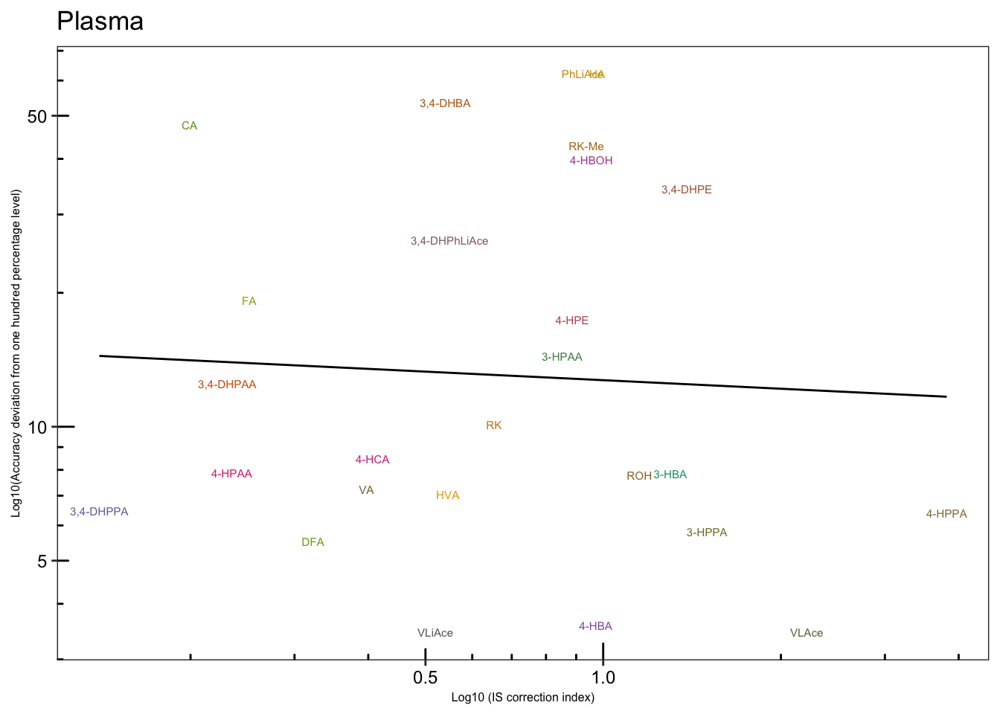
# 4-3) Brain
plt.Acc.IScorrection.brain = Acc.IScorrection.df %>% filter(Tissue == "Br") %>%
ggplot(aes(x = IS.correction, y = Accuracy.abs.diff, color = compound)) +
geom_text(aes(label = compound), size = 2) +
scale_x_log10(breaks = c(.1, .5, 1)) +
scale_y_log10(breaks = c(1, 5, 10, 50, 100)) + annotation_logticks() +
geom_smooth(method = "lm", se = F, color = "black", size = .5) + theme_bw() +
theme(axis.text = element_text(color = "black", size = 9),
strip.text = element_text(face = "bold"),
strip.background = element_blank(), panel.grid = element_blank(),
legend.position = "None", axis.title = element_text(size = 7)) +
scale_color_manual(values = colorRampPalette( brewer.pal(8, "Dark2"))(26) ) +
labs(x = "IS correction index",
y = "Accuracy deviation from \none hundred percentage level",
title = "Brain")
plt.Acc.IScorrection.brain# 5) IS most associated with recovery?
Acc.IScorrection.df %>% select(Tissue, compound, IS.correction, cmpd.code) %>%
left_join(Acc.Mat.tidy.df, by = c("Tissue", "compound")) %>%
ggplot(aes(x = IS.correction, y = effect.percent, color = effect)) +
geom_point() + facet_grid(effect~Tissue, scales = "free") + scale_x_log10() + scale_y_log10()
2.4 Compound instability
degrad.df = read_excel(path, sheet = "Degradation")
# 1) Data normalization, removing the effect of Day and Level
x = degrad.df %>%
gather(-c(Name, `Data File`, `Acq. Date-Time`, Day, Level),
key = compound, value = area) %>%
group_by(Day, Level) %>%
mutate(min.time = min(`Acq. Date-Time`),
time.elapse.h = (`Acq. Date-Time` - min.time)/3600)
degrad.df = x %>% filter(time.elapse.h == 0) %>% # 1st injection of each day
mutate(area.fst.inj = area) %>% select(Day, Level, compound, area.fst.inj) %>%
left_join(x, by = c("Day", "Level", "compound")) %>% ungroup() %>%
group_by(Day, Level, compound) %>%
mutate(`remaining(%)` = area/area.fst.inj * 100) %>%
mutate(time.elapse.h = as.numeric(time.elapse.h) %>% round(2))
# 2) Data visualization
degrad.df %>%
ggplot(aes(x = time.elapse.h, y = `remaining(%)`, color = Day, shape = Level)) +
geom_point() + facet_wrap(~compound, nrow = 5) +
scale_color_brewer(palette = "Set1")# 3) Remove abberant single data point
# Identify "Day4_B_r1.d" as the apparently abberant single data point
degrad.df %>% filter(compound == "RK", `remaining(%)` < 10)
degrad.df = degrad.df %>% filter(`Data File` != "Day4_B_r1.d")# 4) Visualize again
degrad.df %>%
ggplot(aes(x = time.elapse.h, y = `remaining(%)`, color = Day, shape = Level)) +
geom_point() + scale_shape_manual(values = c(5, 1, 4)) +
facet_wrap(~compound, nrow = 4) + scale_color_brewer(palette = "Set1") +
theme_bw() +
theme(axis.text = element_text(color = "black"), strip.text = element_text(face = "bold"),
strip.background = element_blank(), panel.grid = element_blank())degrad.model.df = degrad.df %>%
select(compound, time.elapse.h, `remaining(%)`) %>%
ungroup() %>% nest(-compound) %>%
mutate(model = map(data, ~lm(`remaining(%)` ~ time.elapse.h, data = .)),
tidied = map(model, tidy), glanced = map(model, glance)) %>%
unnest(glanced) %>% rename(p.value1 = p.value) %>% select(-statistic) %>%
unnest(tidied) %>%
select(compound, term, p.value1, term, estimate, r.squared) %>%
mutate(term = str_replace(term, pattern = "time.elapse.h", replacement = "Slope"))
x1 = degrad.model.df %>% filter(term == "Slope") %>%
rename(p.slope = p.value1, estimate.slope = estimate) %>% select(-c(term, r.squared)) %>%
mutate(p.slope = p.adjust(p.slope, method = "bonferroni")) # adjust P value for multiple comparison,
x2 = degrad.model.df %>% filter(term == "(Intercept)") %>%
rename(p.intercept = p.value1, estimate.intercept = estimate) %>% select(-term)
degrad.model.df = x1 %>% left_join(x2, by = "compound")
degrad.df = degrad.df %>%
select(-c(`Acq. Date-Time`, area, min.time, area.fst.inj)) %>%
left_join(degrad.model.df, by = "compound") %>%
mutate(regress = estimate.intercept + estimate.slope * time.elapse.h)
# 6) Arrange compound order by degradation severity
cmpd.ordered.degrad = (degrad.df %>% arrange(estimate.slope))$compound %>% unique()
degrad.df = degrad.df %>% ungroup() %>%
mutate(compound = factor(compound, levels = cmpd.ordered.degrad, ordered = T))
# 7) Extract simple dataset for annotation (faster computation)
regress.summary.df = degrad.df %>% filter(time.elapse.h == 0, Day == "Day1", Level =="A")
# 6) Build regresion line in the plot
# 6-1) All plots
plt.degrade.all = degrad.df %>%
ggplot(aes(x = time.elapse.h, y = `remaining(%)`, color = Day, shape = Level)) +
geom_point() +
scale_shape_manual(values = c(5, 1, 4)) +
facet_wrap(~compound, nrow = 4) + scale_color_brewer(palette = "Set1") +
theme_bw() +
theme(axis.text = element_text(color = "black", size = 8),
strip.text = element_text(face = "bold"), strip.background = element_blank(),
panel.grid = element_blank(), axis.title = element_text(face = "bold")) +
scale_x_continuous(breaks = seq(0, 3, .5)) + scale_y_continuous(breaks = seq(0, 120, 20)) +
geom_line(aes(y = regress), color = "black", size = ln.width) + # calculated regression line
geom_text(data = regress.summary.df, aes(
label = ifelse(r.squared < 0.01, "R^2<0.01", paste("R^2 ==", r.squared %>% round(2) ))),
# hjust = 0, starting from left; x, y position should be outside the aesthetic
x = .1, y = 1, color = "black", size = annot.size, hjust = 0, parse = T) +
geom_text(data = regress.summary.df,
aes(label = paste("p =", ifelse(p.slope > 0.01, p.slope %>% round(2), scientific(p.slope, digits = 2)))),
# if parse, then scientific notation would fail
x = 1.2, y = 1, color = "black", size = annot.size, hjust = 0) +
geom_text(data = regress.summary.df,
aes(label = paste("y =", round(estimate.slope,2), "· x +", round(estimate.intercept,2))) ,
x = .1, y = 15, color = "black", size = annot.size, hjust = 0, fontface = "bold") +
labs(x = "Time (h)", y = "Concentration remaining fraction (%)")
plt.degrade.all# 6-2) Most unstable compounds
regress.summary.df2 = degrad.df %>%
filter(time.elapse.h == 0, Day == "Day1", Level =="A", estimate.slope < -10) # MANUAL INPUT NEEDED!!
plt.degrade.severe = degrad.df %>%
filter(estimate.slope < -10) %>% # MANUAL INPUT NEEDED!!
ggplot(aes(x = time.elapse.h, y = `remaining(%)`, color = Day, shape = Level)) +
geom_point() + scale_shape_manual(values = c(5, 1, 4)) +
facet_wrap(~compound, nrow = 3) + scale_color_brewer(palette = "Set1") + theme_bw() +
theme(axis.text = element_text(color = "black", size = 8),
strip.text = element_text(face = "bold", size = 8),
strip.background = element_blank(), panel.grid = element_blank(),
axis.title = element_text(face = "bold", size = 9)) +
scale_x_continuous(breaks = seq(0, 3, .5)) + scale_y_continuous(breaks = seq(0, 100, 25)) +
geom_line(aes(y = regress), color = "black", size = .5) + # calculated regression line
geom_text(data = regress.summary.df2,
aes(label = ifelse(r.squared < 0.01, "R^2<0.01",
paste("R^2 ==", r.squared %>% round(2) ))), # hjust = 0, starting from left
x = .1, y = 1, # x, y position should be outside the aesthetic
color = "black", size = annot.size, hjust = 0, parse = T) +
geom_text(data = regress.summary.df2,
# if parse, then scientific notation would fail
aes(label = paste("p =", ifelse(p.slope > 0.01, p.slope %>% round(2),
scientific(p.slope, digits = 2)))),
x = 1, y = 1, color = "black", size = annot.size, hjust = 0) +
geom_text(data = regress.summary.df2,
aes(label = paste("y =", round(estimate.slope,2), "· x +", round(estimate.intercept, 2))) ,
x = .1, y = 15, color = "black", size = annot.size, hjust = 0, fontface = "bold") +
labs(x = "Time (h)",
y = "Concentration remaining fraction (%)")
plt.degrade.severe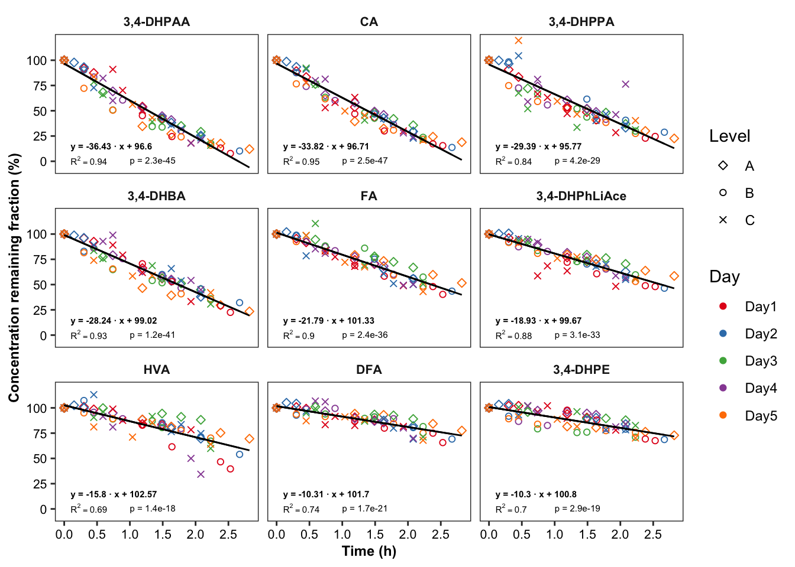
2.4.1 Degradation vs. (recovery & matrix effects & processing efficiency)
Plot degradation slope coorelation with varaince associated with processing efficiency (later with DOE modelling)
degrad.matrix.df = matrix.tidy.df %>%
left_join(regress.summary.df %>% select(compound, estimate.slope), by = "compound") %>%
select(-plt.align) %>% ungroup()
# 1) Compute regression stats
degrad.matrix.regress.df = degrad.matrix.df %>% nest(-c(effect, Tissue)) %>%
mutate(model = map(data, ~ lm(std ~ estimate.slope, data = .)),
glanced = map(model, glance)) %>% unnest(glanced) %>% unnest(data)
# 2) Visualization
plt.degrad.matrix.regress = degrad.matrix.regress.df %>%
left_join(cmpd.code, by = "compound") %>%
ggplot(aes(x = estimate.slope, y = log10(std), color = Level)) +
geom_text(aes(label = compound), size = 1.4) + facet_grid(effect ~ Tissue) +
geom_smooth(method = "lm", se = F, color = "black", size = .5) +
scale_color_brewer(palette = "Dark2") + theme_bw() +
theme(axis.text = element_text(color = "black", size = 8),
strip.text = element_text(face = "bold", size = 8),
strip.background = element_blank(), panel.grid = element_blank(),
axis.title = element_text(face = "bold", size = 9)) +
labs(y = "Log10 (Effects standard deviation (%))",
x = "Degradation slope coefficient") +
geom_text(aes(label = paste0("R^2 =", round(r.squared,4))),
x = -5, y = 2, size = annot.size -.5, color = "black") +
geom_text(aes(label = paste0("p =", scientific(p.value,4))),
x = -5, y = 1.8, size = annot.size - .5, color = "black")
plt.degrad.matrix.regress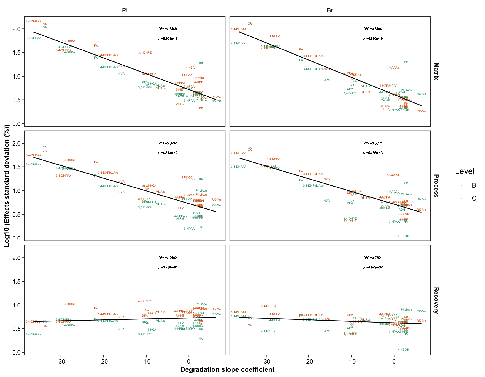
# 3) Combine degradation with matrix validation variation
plot_grid(plt.degrade.severe, plt.degrad.matrix.regress, nrow = 1, rel_widths = c(2.5, 2))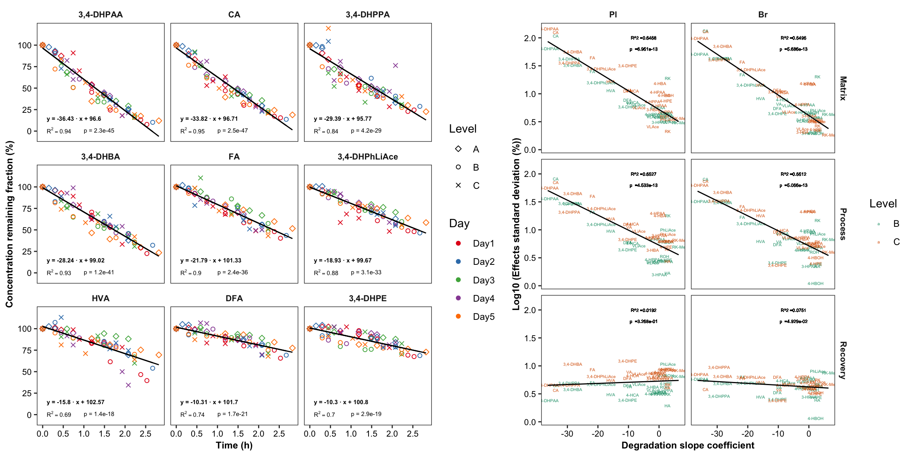
# 4) Combine degradation with matrix validation mean level
degrad.matrix.regress.df %>% left_join(cmpd.code, by = "compound") %>%
ggplot(aes(x = estimate.slope, y = log10(mean), color = Level)) +
geom_text(aes(label = compound)) +
facet_wrap(~Tissue) + annotation_logticks(sides = "l") +
geom_smooth(method = "lm", se = F)2.4.2 Compound degradation vs. accuracy
# 1) set up data set and regression stats
Acc.degrad.df = Accuracy.df %>% filter(Level != "D") %>%
left_join(degrad.model.df %>% select(compound, estimate.slope), by = "compound") %>% ungroup()
Acc.degrad.regression.stats = Acc.degrad.df %>% nest(-Tissue) %>%
mutate(model = map(data, ~lm(`Accuracy.mean(%)` ~ estimate.slope, data = .)),
glanced = map(model, glance)) %>% unnest(glanced)
# 2) Visualize
Acc.degrad.df %>% ggplot(aes(x = estimate.slope, y = `Accuracy.mean(%)`)) +
geom_text(aes(label = compound, color = Level), size = 2.5) +
facet_wrap(~Tissue) +
scale_color_brewer(palette = "Set1") +
geom_smooth(method = "lm", se = F, color = "black", size = .6) +
geom_text(data = Acc.degrad.regression.stats,
aes(label = paste("R^2 ==", r.squared %>% round(2) ), x = -10, y = 200 ), parse = T) +
geom_text(data = Acc.degrad.regression.stats,
aes(label = paste("p ==", p.value %>% scientific(3) ), x = -10, y = 190 ), parse = T) +
theme_bw() + theme(axis.text = element_text(color = "black"),
strip.background = element_blank(), panel.grid = element_blank())2.4.3 Degradation vs. CCD model
# 1) Combination of data set of comound degradation modelling and CCD modelling
degrad.CCD.df = CCD.model.stats.df %>%
select(compound, r.squared) %>%
rename(CCD.R2 = r.squared) %>%
left_join(degrad.model.df %>% select(compound, estimate.slope) %>%
rename(degrad.slope = estimate.slope), by = "compound") %>%
left_join(cmpd.code, by = "compound")
# 2) Compute regression stats
x = lm(CCD.R2 ~ degrad.slope, data = degrad.CCD.df) %>% summary()
R2 = x$r.squared %>% round(2)
Pvalue = (x$coefficients %>% as.tibble())[[2, 4]] %>% as.numeric()
# 3) Visualization
plt.degrad.CCD = degrad.CCD.df %>%
ggplot(aes(x = degrad.slope, y = CCD.R2, color = compound)) +
geom_text(aes(label = compound), size = 2.5) +
scale_color_manual(values = colorRampPalette(brewer.pal(8,"Dark2")) (26) ) +
geom_smooth(method = "lm", se = F, color = "firebrick", size = ln.width, linetype = "dashed") +
annotate(geom = "text", label = paste("R^2 ==", R2), x = -30, y = .9, parse = T, size = 2) +
# parse & scientific seems incompatible ...
annotate(geom = "text", label = paste("p =", scientific(Pvalue, 2)), x = -30, y = .8, size = 2) +
labs(x = "Degradation slope coefficient", y = "CCD model R2") + theme_bw() +
theme(axis.text = element_text(color = "black", size = 8.5), panel.grid = element_blank(),
axis.title = element_text(size = 8.5), legend.position = "None")
plt.degrad.CCD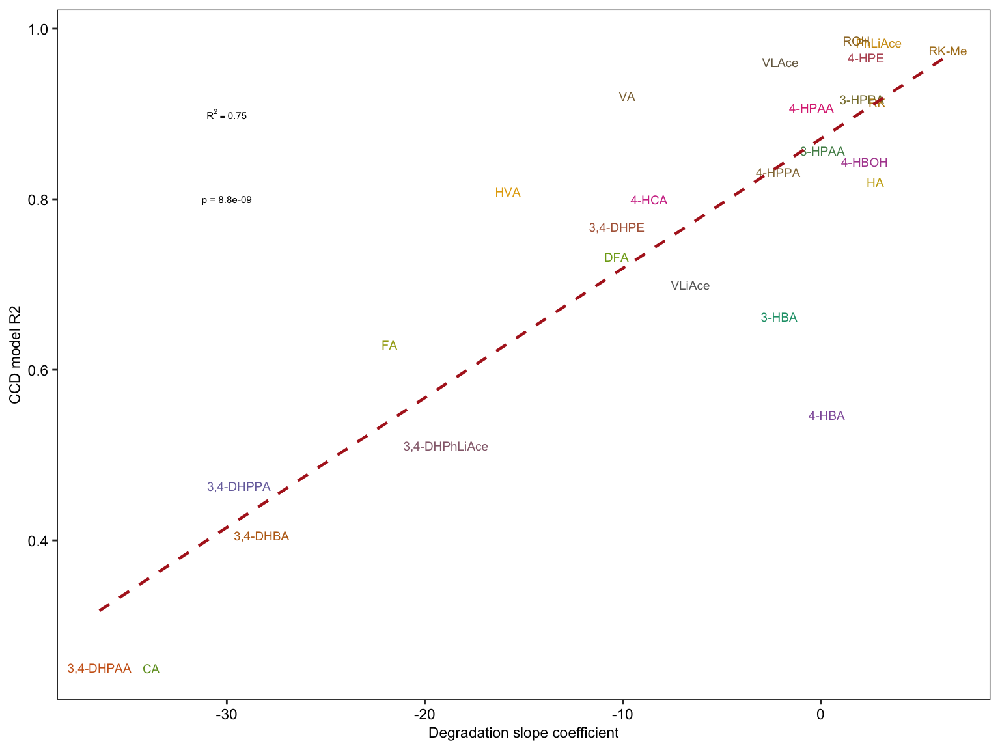
2.4.4 Effects of neat solvent vs. biomatrix
Visualize in-biomatrices injection pattern and compound stability.
# 1) Calculate peak area difference error of the 2nd injection relative to the 1st injection of the same sample at each spike level
area.df = read_excel(path, sheet = "peak area_B.Y.")
x = area.df %>% filter(Level %in% c("A","B","C","D")) %>%
gather(-c(Name, `Data File`, `Acq. Date-Time`, Tissue, Level),
key = compound, value = area) %>%
group_by(compound, Name) %>%
mutate(time.zero = min(`Acq. Date-Time`),
time.elapse = ((`Acq. Date-Time` - time.zero)/3600) %>% as.numeric())
area.df = x %>% filter(time.elapse == 0) %>%
ungroup() %>% select(Name, area, compound) %>% rename(area.timeZero = area) %>%
right_join(x, by = c("Name", "compound")) %>%
mutate(error = (area - area.timeZero)/area.timeZero * 100)
# 2) visualize. Note that the second injection is spaced from the 1st injection by 8.5 ~ 10.5 hours
# 2-1) plasma
plt.plasma.degrad = area.df %>% filter(time.elapse != 0, Tissue == "Pl") %>%
ggplot(aes(x = time.elapse, y = error, color = Level, shape = Tissue)) +
geom_point(position = position_jitter(.2, 0), size = 2) + scale_color_brewer(palette = "Dark2") +
facet_wrap(~compound, nrow = 7) + theme_bw() + scale_shape_manual(values = c(1, 16)) +
theme(strip.background = element_blank(), strip.text = element_text(face = "bold"),
axis.text.y = element_text(color = "black"), panel.grid = element_blank()) +
labs(y = "2nd injection error percent relative to 1st injection of the same sample, spaced by ~10 hours",
title = "Plasma")
plt.plasma.degrad# 2-2) brain
plt.brain.degrad = area.df %>% filter(time.elapse != 0, Tissue == "Br") %>%
ggplot(aes(x = time.elapse, y = error, color = Level, shape = Tissue)) +
geom_point(position = position_jitter(.2, 0), size = 2) + scale_color_brewer(palette = "Dark2") +
facet_wrap(~compound, nrow = 7) + theme_bw() + scale_shape_manual(values = c(1, 16)) +
theme(strip.background = element_blank(), strip.text = element_text(face = "bold"),
axis.text.y = element_text(color = "black"), panel.grid = element_blank()) +
labs(y = "2nd injection error percent relative to 1st injection of the same sample, spaced by ~10 hours",
title = "Brain")
plt.brain.degrad# 2-4) all data combined
plt.2ndInjection.vs.1stinjection.biomatrices = area.df %>% filter(time.elapse != 0) %>%
mutate(compound = factor(compound, levels = rev(cmpd.ordered), ordered = T)) %>%
ggplot(aes(x = 1, y = error, color = Level, shape = Tissue)) +
geom_point(position = position_jitter(0.18, 0), size = 2) +
scale_color_brewer(palette = "Set1") +
scale_shape_manual(values = c(1, 4)) +
facet_wrap(~compound, nrow = 4) + theme_bw() +
theme(strip.background = element_blank(),
strip.text = element_text(face = "bold"),
axis.text.y = element_text(color = "black"),
panel.grid = element_blank(), axis.text.x = element_blank()) +
labs(y = "2nd injection error percent relative to 1st injection of the same sample, spaced by ~10 hours") +
scale_y_continuous(limits = c(-20, 20)) +
annotate(geom = "segment", x = 0.8, xend = 1.2, y = 0, yend = 0, linetype = "dashed") +
geom_rug(alpha = .6)
plt.2ndInjection.vs.1stinjection.biomatrices
# note that the time difference of 2nd vs. 1st injection is for plasma 10.4~10.8 hours, for braom 8.6 ~ 9 hours
# removed 17 outliers
# 2-5) histogram
area.df %>% filter(time.elapse != 0) %>%
mutate(compound = factor(compound, levels = rev(cmpd.ordered), ordered = T)) %>%
ggplot(aes(x = error, color = Level, alpha = Tissue, fill = Tissue)) + geom_histogram() +
scale_color_brewer(palette = "Set1") +
facet_wrap(~compound, nrow = 5) + theme_bw() +
theme(strip.background = element_blank(), strip.text = element_text(face = "bold"),
axis.text.y = element_text(color = "black"), panel.grid = element_blank()) +
labs(y = "2nd injection error percent relative to 1st injection of the same sample, spaced by ~10 hours") +
scale_x_continuous(limits = c(-20, 20))## `stat_bin()` using `bins = 30`. Pick better value with `binwidth`.2.4.5 Degradation test
Another independant test in a preliminary study, comparing the compound stability in neat solvent vs. in plasma (collected as a different biosample lot from the prior validation study)
degrad.prelim = read_excel(path, sheet = "Degrad_prelim")
# clean up
degrad.prelim = degrad.prelim %>%
gather(-c(Sample.Name, Data.File, Acq.Date.Time, Matrix.type, Spike.conc.ng.mL),
key = compound, value = response)
# starting time
degrad.prelim = degrad.prelim %>% group_by(Sample.Name) %>%
mutate(time.elapsed = Acq.Date.Time - min(Acq.Date.Time),
time.elapsed = (time.elapsed/3600) %>% as.numeric() %>% round(2))
# response relative to the 1st inj response
degrad.prelim = degrad.prelim %>% filter(time.elapsed == 0) %>% ungroup() %>%
select(Sample.Name, compound, response) %>%
rename(response.fst.inj = response) %>%
right_join(degrad.prelim, by = c("Sample.Name", "compound")) %>%
group_by(Sample.Name) %>% mutate(remaining = response / response.fst.inj * 100)
# visualize
degrad.prelim %>%
mutate(compound = factor(compound, levels = cmpd.ordered.degrad, ordered = T)) %>%
filter(time.elapsed <= 10 & Spike.conc.ng.mL <= 4000 & Spike.conc.ng.mL >= 50, remaining < 120) %>%
ggplot(aes(x = time.elapsed, y = remaining, color = Matrix.type)) +
geom_point(size = 1, shape = 21) +
facet_wrap(~compound, nrow = 4) + scale_color_brewer(palette = "Set1") + theme_bw() +
theme(panel.grid = element_blank(), axis.text = element_text(color = "black"),
strip.background = element_blank(), strip.text = element_text(face = "bold")) +
geom_smooth(method = "lm", se = F, size = .8) +
scale_y_continuous(breaks = seq(0, 100, 25)) +
scale_x_continuous(breaks = seq(0, 10, 2))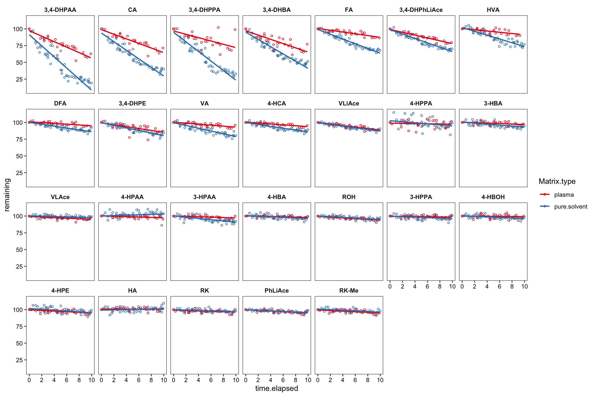
2.5 Method merits correlation matrix
## Blank level
CM1 =
Accuracy.df %>% ungroup() %>%
select(compound, Tissue, blank.mean) %>%
group_by(compound, Tissue) %>%
summarise(mean(blank.mean)) %>%
rename(`blank AVG` = `mean(blank.mean)`)
## Accuracy mean, variance and blank level
x = Accuracy.df %>%
select(compound, Tissue, Level, `Accuracy.mean(%)`, `Accuracy.std (%)`) %>% ungroup()
x1 = x %>% filter(Level == "A") %>%
rename(`Accuracy AVG (A)` = `Accuracy.mean(%)`, `Accuracy SD (A)` = `Accuracy.std (%)`) %>%
select(-Level)
x2 = x %>% filter(Level == "B") %>%
rename(`Accuracy AVG (B)` = `Accuracy.mean(%)`, `Accuracy SD (B)` = `Accuracy.std (%)`) %>%
select(-Level)
x3 = x %>% filter(Level == "C") %>%
rename(`Accuracy AVG (C)` = `Accuracy.mean(%)`, `Accuracy SD (C)` = `Accuracy.std (%)`) %>%
select(-Level)
x4 = x %>% filter(Level == "D") %>%
rename(`Accuracy AVG (D)` = `Accuracy.mean(%)`, `Accuracy SD (D)` = `Accuracy.std (%)`) %>%
select(-Level)
my.by = c("compound", "Tissue")
CM2 = x1 %>% left_join(x2, by = my.by) %>% left_join(x3, by = my.by) %>% left_join(x4, by = my.by)
## Matrix effects mean and variance
# ----Recovery
y11 = matrix.df %>% select(Tissue, Level, compound, `Recovery.mean(%)`) %>%
filter(Level == "B") %>% rename(`Recovery AVG (B)` = `Recovery.mean(%)`) %>% select(-Level)
y12 = matrix.df %>% select(Tissue, Level, compound, `Recovery.mean(%)`) %>%
filter(Level == "C") %>% rename(`Recovery AVG (C)` = `Recovery.mean(%)`) %>% select(-Level)
y13 = matrix.df %>% select(Tissue, Level, compound, `Recovery.std (%)`) %>%
filter(Level == "B") %>% rename(`Recovery SD (B)` = `Recovery.std (%)`) %>% select(-Level)
y14 = matrix.df %>% select(Tissue, Level, compound, `Recovery.std (%)`) %>%
filter(Level == "C") %>% rename(`Recovery SD (C)` = `Recovery.std (%)`) %>% select(-Level)
# ----Matrix effects
y21 = matrix.df %>% select(Tissue, Level, compound, `Matrix.mean(%)` ) %>%
filter(Level == "B") %>% rename(`Matrix effects AVG (B)` = `Matrix.mean(%)`) %>% select(-Level)
y22 = matrix.df %>% select(Tissue, Level, compound, `Matrix.mean(%)`) %>%
filter(Level == "C") %>% rename(`Matrix effects AVG (C)` = `Matrix.mean(%)`) %>% select(-Level)
y23 = matrix.df %>% select(Tissue, Level, compound, `Matrix.std (%)`) %>%
filter(Level == "B") %>% rename(`Matrix effects SD (B)` = `Matrix.std (%)`) %>% select(-Level)
y24 = matrix.df %>% select(Tissue, Level, compound, `Matrix.std (%)`) %>%
filter(Level == "C") %>% rename(`Matrix effects SD (C)` = `Matrix.std (%)`) %>% select(-Level)
# ----Processing efficiency
y31 = matrix.df %>% select(Tissue, Level, compound, `Process.mean (%)`) %>%
filter(Level == "B") %>% rename(`Process efficiency AVG (B)` = `Process.mean (%)`) %>% select(-Level)
y32 = matrix.df %>% select(Tissue, Level, compound, `Process.mean (%)`) %>%
filter(Level == "C") %>% rename(`Process efficiency AVG (C)` = `Process.mean (%)`) %>% select(-Level)
y33 = matrix.df %>% select(Tissue, Level, compound, `Process.std (%)`) %>%
filter(Level == "B") %>% rename(`Process efficiency SD (B)` = `Process.std (%)`) %>% select(-Level)
y34 = matrix.df %>% select(Tissue, Level, compound, `Process.std (%)`) %>%
filter(Level == "C") %>% rename(`Process efficiency SD (C)` = `Process.std (%)`) %>% select(-Level)
# ----Combine
CM3 = y11 %>% left_join(y12, by = my.by) %>% left_join(y13, by = my.by) %>%
left_join(y14, by = my.by) %>% left_join(y21, by = my.by) %>% left_join(y22, by = my.by) %>%
left_join(y23, by = my.by) %>% left_join(y24 , by = my.by) %>%
left_join(y31, by = my.by) %>% left_join(y32, by = my.by) %>%
left_join(y33, by = my.by) %>% left_join(y34 , by = my.by)
# CM3 %>% View()
## Accuracy variance split into blank variance, injection variance, and sample variance, with corresponding split ratio
z = variance.partition.all.df %>% spread(key = source, value = variance) %>%
mutate(total.var = blank.var + conc.var.inj + conc.var.smpl, # total variance
blank.var.percent = blank.var / total.var,
inj.var.percent = conc.var.inj/total.var,
smpl.var.percent = conc.var.smpl / total.var) %>% # variance percent
select(Tissue, Level, compound, ends_with("var.percent"))
# ---- blank variance percent
z11 = z %>% select(Tissue, Level, compound, blank.var.percent) %>%
filter(Level == "A") %>% rename(`Blank VAR % (A)` = blank.var.percent) %>% select(-Level)
z12 = z %>% select(Tissue, Level, compound, blank.var.percent) %>%
filter(Level == "B") %>% rename(`Blank VAR % (B)` = blank.var.percent) %>% select(-Level)
z13 = z %>% select(Tissue, Level, compound, blank.var.percent) %>%
filter(Level == "C") %>% rename(`Blank VAR % (C)` = blank.var.percent) %>% select(-Level)
z14 = z %>% select(Tissue, Level, compound, blank.var.percent) %>%
filter(Level == "D") %>% rename(`Blank VAR % (D)` = blank.var.percent) %>% select(-Level)
# ---- injection variance percent
z21 = z %>% select(Tissue, Level, compound, inj.var.percent) %>%
filter(Level == "A") %>% rename(`Injection VAR % (A)` = inj.var.percent) %>% select(-Level)
z22 = z %>% select(Tissue, Level, compound, inj.var.percent) %>%
filter(Level == "B") %>% rename(`Injection VAR % (B)` = inj.var.percent) %>% select(-Level)
z23 = z %>% select(Tissue, Level, compound, inj.var.percent) %>%
filter(Level == "C") %>% rename(`Injection VAR % (C)` = inj.var.percent) %>% select(-Level)
z24 = z %>% select(Tissue, Level, compound, inj.var.percent) %>%
filter(Level == "D") %>% rename(`Injection VAR % (D)` = inj.var.percent) %>% select(-Level)
# ---- QC sample variance percent
z31 = z %>% select(Tissue, Level, compound, smpl.var.percent) %>%
filter(Level == "A") %>% rename(`QC sample VAR % (A)` = smpl.var.percent) %>% select(-Level)
z32 = z %>% select(Tissue, Level, compound, smpl.var.percent) %>%
filter(Level == "B") %>% rename(`QC sample VAR % (B)` = smpl.var.percent) %>% select(-Level)
z33 = z %>% select(Tissue, Level, compound, smpl.var.percent) %>%
filter(Level == "C") %>% rename(`QC sample VAR % (C)` = smpl.var.percent) %>% select(-Level)
z34 = z %>% select(Tissue, Level, compound, smpl.var.percent) %>%
filter(Level == "D") %>% rename(`QC sample VAR % (D)` = smpl.var.percent) %>% select(-Level)
CM4 = tibble()
# ----Combine
CM4 = z11 %>% left_join(z12, by = my.by) %>% left_join(z13, by = my.by) %>%
left_join(z14, by = my.by) %>% left_join(z21, by = my.by) %>% left_join(z22, by = my.by) %>%
left_join(z23, by = my.by) %>% left_join(z24 , by = my.by) %>% left_join(z31, by = my.by) %>%
left_join(z32, by = my.by) %>% left_join(z33, by = my.by) %>% left_join(z34 , by = my.by)
## Degradation slope
CM5 = degrad.model.df %>% select(compound, estimate.slope) %>%
rename(`Degradation slope` = estimate.slope)
## CCD model efficiency
CM6 = CCD.model.stats.df %>% select(compound, r.squared)
CM6 = CCD.residual.df %>% filter(center.pt == "yes.center") %>% group_by(compound) %>%
summarise(center.pt.sd = sd(resp.Zscore)) %>% left_join(CM6, by = "compound") %>%
rename(`CCD center points SD` = center.pt.sd, `CCD model R2` = r.squared)
## ALL TOGETHER
CM = CM1 %>% left_join(CM2, by = my.by) %>% left_join(CM3, by = my.by) %>%
left_join(CM4, by = my.by) %>% left_join(CM5, by = "compound") %>% left_join(CM6, by = "compound")
CM.plasma = CM %>% filter(Tissue == "Pl")
CM.brain = CM %>% filter(Tissue == "Br")## Heatmap
mycolor = c(colorRampPalette(brewer.pal(11, "RdBu"))(100)) %>% rev()
CM.plasma %>% ungroup() %>% select(-c(compound, Tissue)) %>%
cor() %>% Heatmap(col = mycolor,
heatmap_legend_param = list(
color_bar = "continuous", legend_height = unit(8, "cm"), title = ""),
column_title = "Plasma")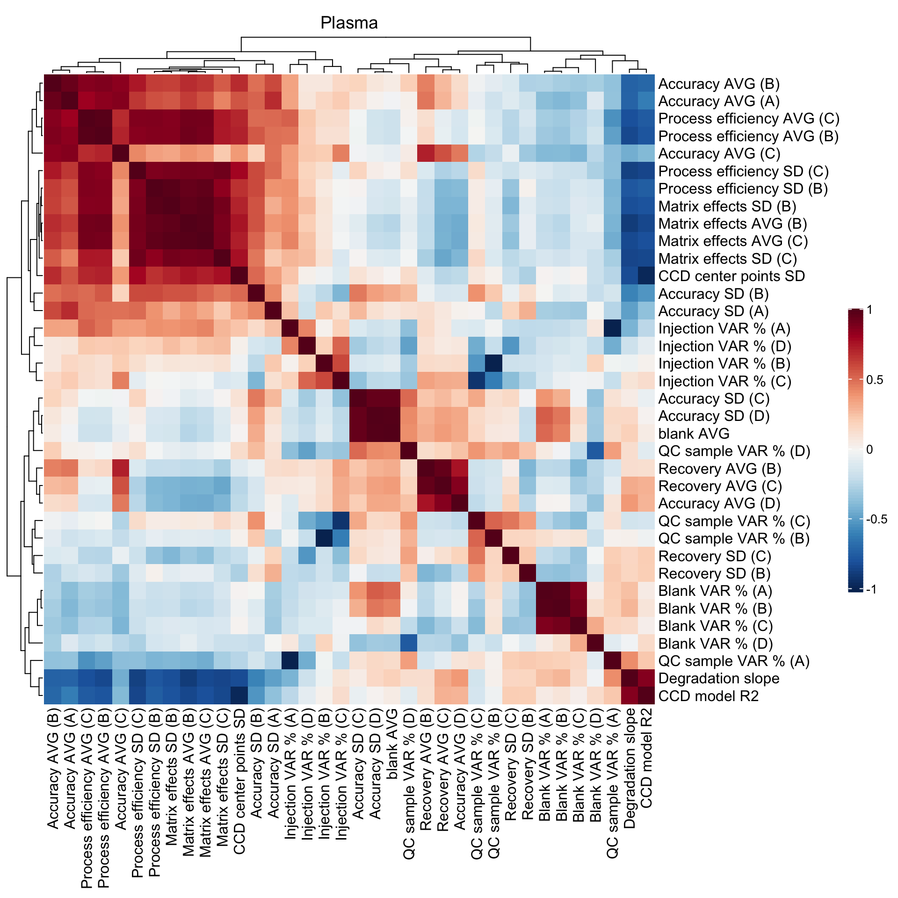
CM.brain %>% ungroup() %>% select(-c(compound, Tissue)) %>%
cor() %>% Heatmap(col = mycolor,
heatmap_legend_param = list(
color_bar = "continuous", legend_height = unit(8, "cm"), title = ""),
cluster_rows = T, cluster_columns = T,
# row_names_gp = gpar(fontsize = 6.5),
# column_names_gp = gpar(fontsize = 6.5),
column_title = "Brain")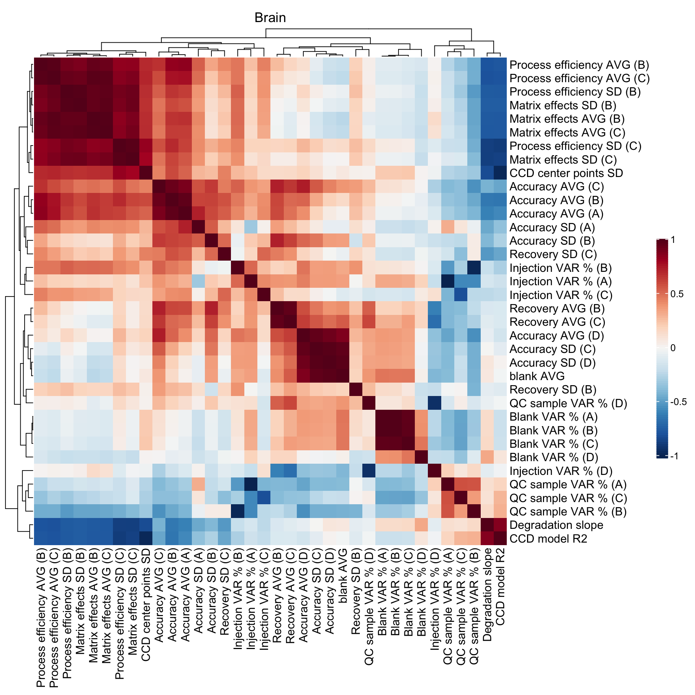